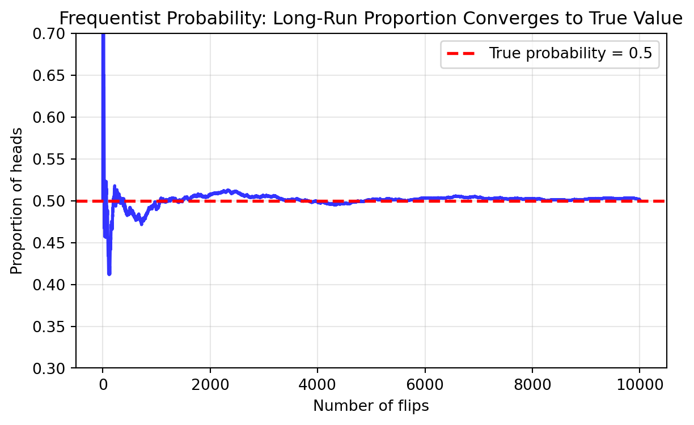
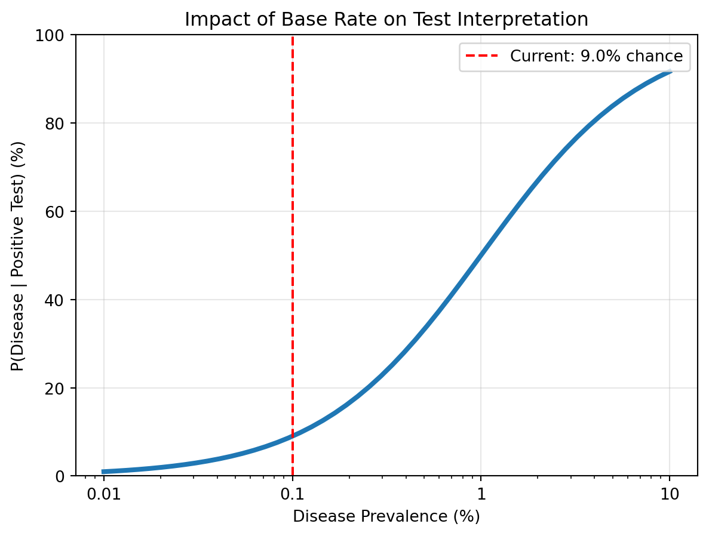
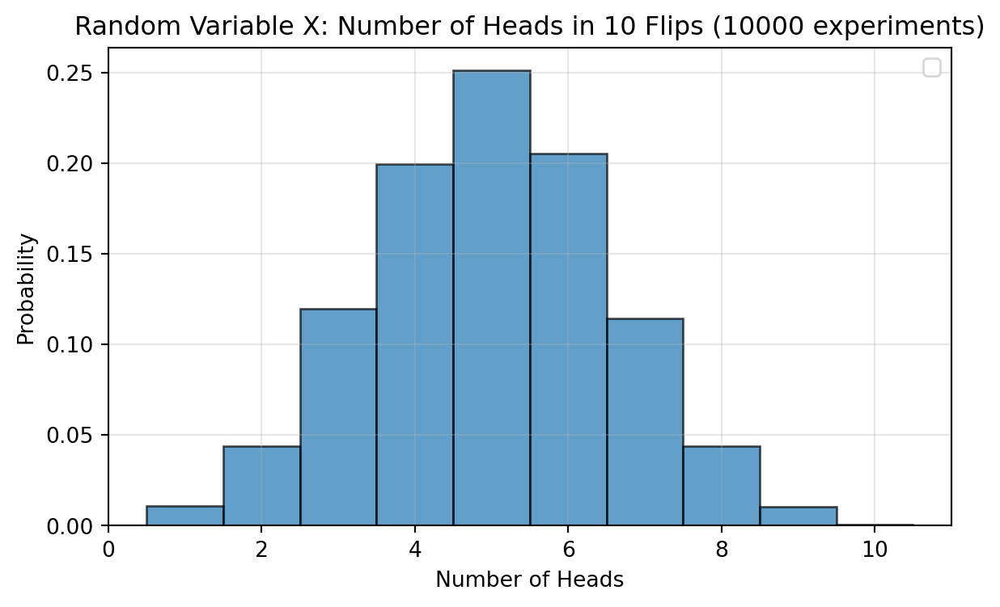
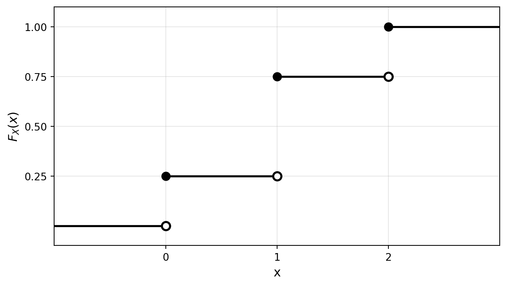
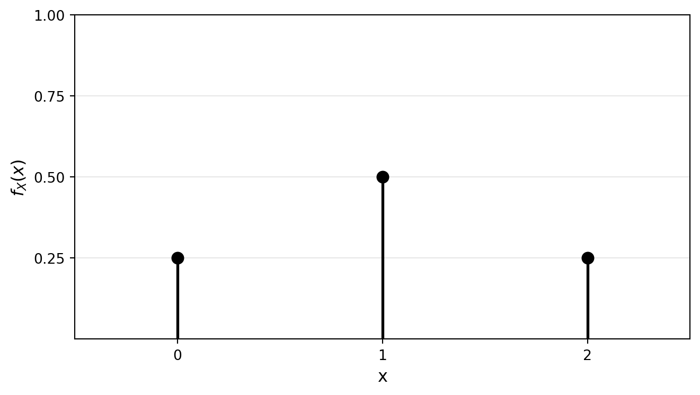
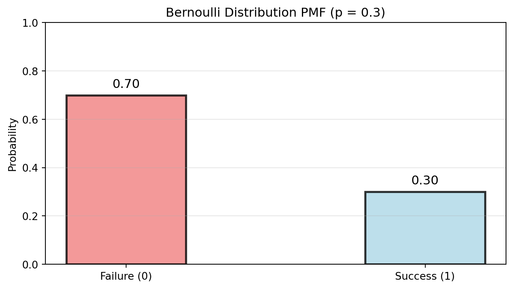
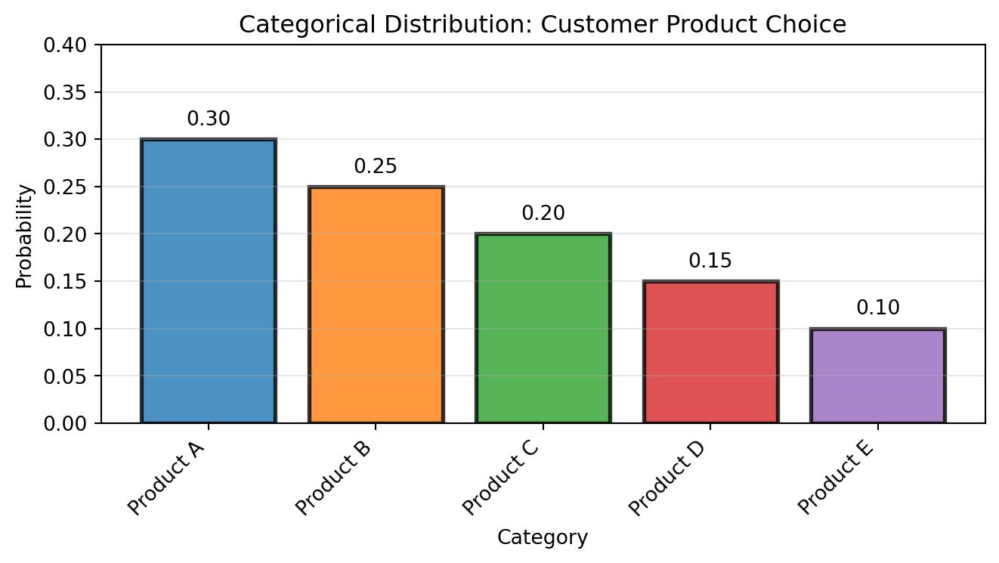
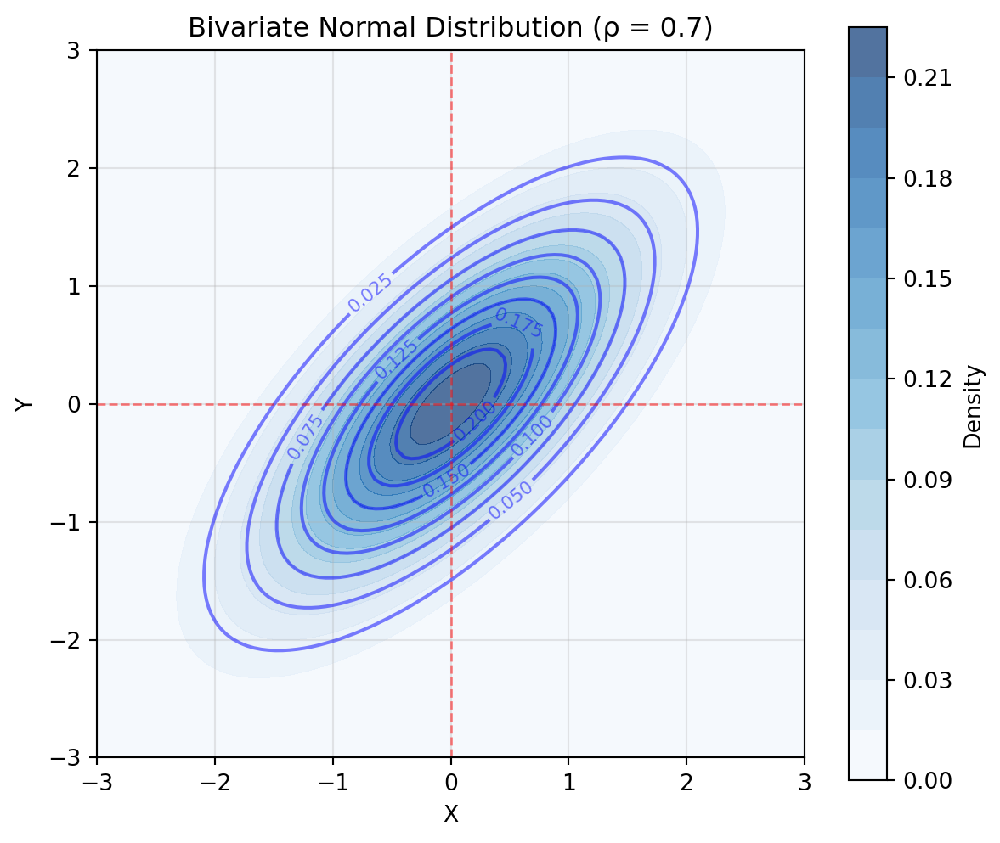

After completing this chapter, you will be able to:
Explain the role of probability in data science and statistical modeling.
Apply fundamental probability concepts, including sample spaces, events, and the axioms of probability.
Calculate probabilities using independence, conditional probability, and Bayes’ theorem.
Distinguish between discrete and continuous random variables and use their distribution functions (PMF, PDF, CDF).
Describe and apply key univariate and multivariate distributions (e.g., Binomial, Normal, Multinomial).
Note
This chapter covers fundamental probability concepts essential for statistical inference. The material is adapted and expanded from Chapters 1 and 2 of Wasserman (2013), which interested readers are encouraged to consult directly for a more rigorous and comprehensive treatment.
1.2 Why Do We Need Statistics?
1.2.1 Statistics and Machine Learning in Data Science
Machine learning (ML) has revolutionized our ability to make predictions. Given enough training data, modern ML models can achieve remarkable accuracy on unseen data that resembles what they’ve been trained on. But there’s a crucial limitation: these models excel when the new data comes from the same distribution as the training data.
How do we move beyond this constraint to make reliable predictions in the real world, where conditions change and data can be messy, incomplete, or collected differently than our training set?
This is where statistics becomes essential. Statistics provides the tools to:
Understand principles of data collection: How was the data gathered? What biases might exist?
Plan data collection strategically: Design experiments and surveys that yield meaningful insights
Deal with missing data: Real-world data is rarely complete - we need principled ways to handle gaps
Understand causality in modeling: Correlation isn’t causation, and confounding variables can mislead us
Without these statistical foundations, even the most sophisticated ML models can fail spectacularly when deployed in practice.
1.2.2 Case Study: IBM Watson Health
The story of IBM Watson Health illustrates why statistical thinking is crucial for real-world AI applications.
In 2011, IBM Watson made headlines by defeating human champions on the quiz show Jeopardy! This victory showcased the power of natural language processing and knowledge retrieval. IBM saw an opportunity: if Watson could master general knowledge, why not train it to be a doctor?
Watson Health launched in 2015 with an ambitious goal: use data from top US hospitals to train an AI system that could diagnose and treat patients anywhere in the world. The vision was compelling - bring world-class medical expertise to underserved areas through AI.
Over the years, IBM:
Spent over $4 billion on acquisitions
Employed 7,000 people developing the system
Partnered with prestigious medical institutions
Yet by 2022, IBM sold Watson Health’s data and assets for just $1 billion - a massive loss. What went wrong?
The fundamental issue was data representativeness. Watson Health was trained on data from elite US hospitals treating specific patient populations. But this data didn’t represent:
Different healthcare systems and practices globally
Diverse patient populations with varying genetics, lifestyles, and environmental factors
Resource constraints in different settings
Variations in how medical data is recorded and coded
This failure wasn’t due to inadequate machine learning algorithms - it was a failure to apply statistical thinking about data collection, representation, and generalization. No amount of computational power can overcome fundamentally biased or unrepresentative data.
In his influential essay Breiman (2001), statistician Leo Breiman identified two distinct approaches to statistical modeling, each with different goals and philosophies. These are often cast as the two approaches of prediction vs. explanation.
Feature
The Algorithmic Modeling Culture
The Data Modeling Culture
Goal
Accurate prediction
Understanding mechanisms
Approach
Treat the mapping from inputs to outputs as a black box
Specify interpretable models that represent how nature works
Validation
Predictive accuracy on held-out data
Statistical tests, confidence intervals, model diagnostics
Philosophy
“It doesn’t matter how it works, as long as it works”
“We need to understand which factors matter and why”
Examples
Deep learning, random forests, boosting
Linear regression, causal inference, experimental design
Think of these two cultures like different approaches to cooking:
The algorithmic approach is like following a
top-rated recipe - you don’t know why you fold (not stir) the batter or
why ingredients must be room temperature, but following the steps
precisely often produces better results than many trained cooks achieve.
You can pick 5-star recipes and succeed without any cooking
knowledge.
The data modeling approach is like understanding
food science - you know about Maillard reactions, gluten development,
and emulsification. But translating this into a great dish is slow and
complex. You might spend hours calculating optimal ratios only to
produce something inferior to what a simple recipe would have given
you.
This creates a fundamental tension: The recipe follower often
produces better food faster. The food scientist understands why things
work and with time might produce a breakthrough - but may struggle to
match the empirical success of well-tested recipes. In machine learning,
this same tension exists - a neural network might predict customer
behavior better than any theory-based model, even if we don’t understand
why. Sometimes, letting algorithms find patterns empirically works
better than imposing our theoretical understanding. However,
understanding often gives us an edge to build better algorithms and
generalize to novel scenarios.
Formally, both cultures can be seen as addressing the problem of
characterizing a mapping:
\[X \rightarrow Y\]
where \(X\) represents
input features and
\(Y\) represents the
response.
Algorithmic approach (example): Find a function
\(\hat{f}\) that minimizes prediction
error. A common approach is to find the function that minimizes the
mean squared error (MSE),
\[\text{MSE} = \frac{1}{N} \sum_{n=1}^N (Y_n - \hat{f}(X_n))^2\]
that is make the squared difference between the actual outcome
\(Y_n\) and the prediction
\(\hat{f}(X_n)\) as small as possible
over the available training data. In practice, we often report the
root mean squared error (RMSE) =
\(\sqrt{\text{MSE}}\), which has the
same units as \(Y\). We don’t care
about what the function \(\hat{f}\)
looks like, as long as it minimizes this error.
Data modeling approach (example): Build a
mechanistic model
\(Y = f(X; \theta) + \epsilon\)
where:
\(f\) has a specific, interpretable
form
\(\theta\) are parameters with
scientific, interpretable meaning
\(\epsilon\) represents random
error
While fitting the model to data often still involves optimizing some
objective, the goal here is to study the best-fitting parameters
\(\theta\), or find the best model
\(f\) among a set of competing
hypotheses.
We compare here the two approaches represented by a random forest
(RF) model and a linear
regression model. The former represents a traditional machine
learning approach, while the latter is a staple of statistical
modelling.
A trained random forest model is harder to interpret, hence falls in
the “algorithmic” camp for the purpose of this example. Conversely, a
fitted linear regression model yields interpretable weights
which directly tell us how the features linearly affect the response, so
it represents the data modeling camp.
# Comparing algorithmic vs data modeling approachesimport numpy as npimport pandas as pdfrom sklearn.model_selection import train_test_splitfrom sklearn.ensemble import RandomForestRegressorimport statsmodels.api as sm# Load synthetic housing price data with complex patterns# File available here: # https://raw.githubusercontent.com/lacerbi/stats-for-ds-website/refs/heads/main/data/housing_prices.csvdf = pd.read_csv('../data/housing_prices.csv')# Prepare features and targetfeatures = ['size_sqft', 'bedrooms', 'age_years', 'location_score', 'garage_spaces', 'has_pool', 'crime_rate', 'school_rating']X = df[features]y = df['price']# Split dataX_train, X_test, y_train, y_test = train_test_split(X, y, test_size=0.2, random_state=42)print(f"Dataset: {X.shape[0]:,} houses with {X.shape[1]} features")print(f"Training on {len(X_train):,} houses, testing on {len(X_test):,}")print(f"\nAverage house price: €{y.mean():,.0f}")print(f"Price standard deviation: €{y.std():,.0f}")# ALGORITHMIC APPROACH: Random Forestrf_model = RandomForestRegressor(n_estimators=100, random_state=42, n_jobs=-1)rf_model.fit(X_train, y_train)rf_predictions = rf_model.predict(X_test)# Calculate metricsfrom sklearn.metrics import mean_squared_errorrf_rmse = np.sqrt(mean_squared_error(y_test, rf_predictions))print("\n=== ALGORITHMIC APPROACH (Random Forest) ===")print(f"Root Mean Squared Error (RMSE): €{rf_rmse:,.0f}")print("\nFeature Importances:")for feature, importance inzip(features, rf_model.feature_importances_):print(f" {feature}: {importance:.3f}")
Dataset: 5,000 houses with 8 features
Training on 4,000 houses, testing on 1,000
Average house price: €439,750
Price standard deviation: €108,720
=== ALGORITHMIC APPROACH (Random Forest) ===
Root Mean Squared Error (RMSE): €32,608
Feature Importances:
size_sqft: 0.125
bedrooms: 0.022
age_years: 0.022
location_score: 0.047
garage_spaces: 0.013
has_pool: 0.007
crime_rate: 0.018
school_rating: 0.746
# DATA MODELING APPROACH: Linear Regression# Add constant term for interceptX_train_lm = sm.add_constant(X_train)X_test_lm = sm.add_constant(X_test)# Fit linear modellm_model = sm.OLS(y_train, X_train_lm)lm_results = lm_model.fit()# Make predictionslm_predictions = lm_results.predict(X_test_lm)lm_rmse = np.sqrt(mean_squared_error(y_test, lm_predictions))print("\n=== DATA MODELING APPROACH (Linear Regression) ===")print(f"Root Mean Squared Error (RMSE): €{lm_rmse:,.0f}")# Show interpretable coefficientsprint("\nLinear Model Coefficients:")coef_df = pd.DataFrame({'Feature': ['Intercept'] + features,'Coefficient': lm_results.params,'Std Error': lm_results.bse,'P-value': lm_results.pvalues})coef_df['Significant'] = coef_df['P-value'] <0.05print(coef_df.to_string(index=False))print("\n=== INTERPRETATION ===")print("Linear model suggests:")for i, feature inenumerate(features): coef = lm_results.params[i+1] # +1 to skip interceptifabs(coef) >100:print(f"- Each unit increase in {feature}: €{coef:,.0f} change in price")print("\nBUT: The model performs (slightly) worse than Random Forest.")print(f"RF RMSE: €{rf_rmse:,.0f} vs Linear RMSE: €{lm_rmse:,.0f}")print(f"That's €{lm_rmse - rf_rmse:,.0f} worse prediction error.")print(f"Should we care more about prediction or understanding?")
=== DATA MODELING APPROACH (Linear Regression) ===
Root Mean Squared Error (RMSE): €34,061
Linear Model Coefficients:
Feature Coefficient Std Error P-value Significant
Intercept -241058.748914 4060.095405 0.000000e+00 True
size_sqft 72.843101 1.113174 0.000000e+00 True
bedrooms 17505.976934 561.915079 6.369481e-191 True
age_years 66.884992 37.769905 7.666128e-02 False
location_score 6326.172511 191.797597 3.372091e-211 True
garage_spaces 15599.005835 602.273749 7.547388e-137 True
has_pool 29992.244032 1362.847287 2.110344e-101 True
crime_rate -1268.321711 110.805186 7.133961e-30 True
school_rating 66814.033458 394.636343 0.000000e+00 True
=== INTERPRETATION ===
Linear model suggests:
- Each unit increase in bedrooms: €17,506 change in price
- Each unit increase in location_score: €6,326 change in price
- Each unit increase in garage_spaces: €15,599 change in price
- Each unit increase in has_pool: €29,992 change in price
- Each unit increase in crime_rate: €-1,268 change in price
- Each unit increase in school_rating: €66,814 change in price
BUT: The model performs (slightly) worse than Random Forest.
RF RMSE: €32,608 vs Linear RMSE: €34,061
That's €1,453 worse prediction error.
Should we care more about prediction or understanding?
Both approaches have their place in modern data science. The algorithmic culture has driven breakthroughs in areas like computer vision and natural language processing, where prediction accuracy is paramount. For example, large language models (LLMs) are massively large deep neural networks (pre)trained with the extremely simple objective of just “predicting the next word”1 – without any attempt at understanding the underlying process.
The data modeling culture remains essential for scientific understanding, policy decisions, and any application where we need to know not just what will happen, but why. For LLMs, and in ML more broadly, this aspect is studied by the field of interpretability or “explainable ML” – trying to understand how modern ML models “think” and reach their conclusions.
1.3 Foundations of Probability
Probability provides the mathematical language for quantifying uncertainty. Before we can make statistical inferences or build predictive models, we need a solid foundation in probability theory.
Finnish Terminology Reference
This course is taught internationally, but for Finnish-speaking students, here’s a reference table of key probability terms you may have encountered in your earlier studies:
English
Finnish
Context
Sample space
Perusjoukko, otosavaruus
The set of all possible outcomes
Event
Tapahtuma
A subset of the sample space
Probability distribution
Todennäköisyysjakauma
Assignment of probabilities to events
Probability measure
Todennäköisyysmitta
Mathematical function P satisfying axioms
Independent
Riippumattomat
Events that don’t influence each other
Conditional probability
Ehdollinen todennäköisyys
Probability given some information
Bayes’ Theorem
Bayesin kaava
Formula for updating probabilities
Random variable
Satunnaismuuttuja
Function mapping outcomes to numbers
Cumulative distribution function (CDF)
Kertymäfunktio
P(X \le x)
Discrete
Diskreetti
Taking countable values
Probability mass function (PMF)
Todennäköisyysmassafunktio
P(X = x) for discrete X
Probability density function (PDF)
Tiheysfunktio
Density for continuous variables
Quantile function
Kvantiilifunktio
Inverse of CDF
First quartile
Ensimmäinen kvartiili
25th percentile
Median
Mediaani
50th percentile
Joint density function
Yhteistiheysfunktio
PDF for multiple variables
Marginal density
Reunatiheysfunktio
PDF of one variable from joint
Conditional density
Ehdollinen tiheysfunktio
PDF given another variable’s value
Random vector
Satunnaisvektori
Vector of random variables
Independent and identically distributed (IID)
Riippumattomat ja samoin jakautuneet
Common assumption for data
Random sample
Satunnaisotos
IID observations from population
Frequentist probability
Frekventistinen todennäköisyys
Long-run frequency interpretation
Subjective probability
Subjektiivinen todennäköisyys
Degree of belief interpretation
Note: Some terms have multiple Finnish translations. We report here the most common ones.
1.3.1 Sample Spaces and Events
The sample space\Omega is the set of all possible outcomes of an experiment. Individual elements \omega \in \Omega are called sample outcomes, realizations, or just elements. Subsets of \Omega are called events.
Notation:\omega and \Omega are the lowercase (respectively, uppercase) version of the Greek letter omega.
Example: Coin flips
If we flip a coin twice, where each outcome can be head (H) or tails (T), the sample space is: \Omega = \{HH, HT, TH, TT\}
The event “first flip is heads” is A = \{HH, HT\}.
Example: Temperature measurement
When measuring temperature, the sample space might be the full set of real numbers: \Omega = \mathbb{R} = (-\infty, \infty)
The event “temperature between 20°C and 25°C” is the interval A = [20, 25].
Note that we often take \Omega to be larger than strictly necessary - in this case for example we are including physically impossible values like -1000°C. This is still mathematically valid. As we will see later, we can assign zero probability to impossible events.
Notation:[a, b] denotes the interval between a and b (included), whereas (a, b) is the interval between a and b (excluded).
Sample spaces can be:
Finite: \Omega = \{1, 2, 3, 4, 5, 6\} for a die roll
Countably infinite: \Omega = \{1, 2, 3, ...\} for “number of flips until first heads”
Uncountably infinite: \Omega = [0, 1] for “random number between 0 and 1”
1.3.2 Set Operations for Events
Since events are sets, we can combine them using standard set operations:
Operation
Notation
Meaning
Complement
A^c
“not A” - all outcomes not in A
Union
A \cup B
“A or B” - outcomes in either A or B (or both)
Intersection
A \cap B
“A and B” - outcomes in both A and B
Difference
A \setminus B
Outcomes in A but not in B
Note
Disjoint events: Events A and B are disjoint (or mutually exclusive) if A \cap B = \emptyset. This means they cannot occur simultaneously. For example, in the case of a standard six-sided die roll, let A = “rolling an even number” = \{2, 4, 6\} and B = “rolling a 1” = \{1\}. These events are disjoint because you can’t roll both an even number AND a 1 simultaneously.
1.3.3 Probability Axioms
Now that we have defined the space of possible events, we can define the probability of an event. A probability measure must satisfy three fundamental axioms:
A function \mathbb{P} that assigns a real number \mathbb{P}(A) to each event A is a probability measure if:
Non-negativity: \mathbb{P}(A) \geq 0 for every event A
Normalization: \mathbb{P}(\Omega) = 1
Countable additivity: If A_1, A_2, ... are disjoint events, then: \mathbb{P}\left(\bigcup_{i=1}^{\infty} A_i\right) = \sum_{i=1}^{\infty} \mathbb{P}(A_i)
Why These Axioms
These axioms ensure probability respects intuitive laws:
Non-negativity: The probability of rain tomorrow cannot be negative.
Normalization: When rolling a six-sided die, the probability of getting one of the faces \{1, 2, 3, 4, 5, 6\} is 1: 1 represent the total probability.
Countable additivity: The probability of rolling a 1 or a 2 on a die is the sum of their individual probabilities, as these events cannot happen together.
It turns out that under some assumptions, it can be shown that these axioms are exactly what you would pick if one wants to quantify the concept of “possibility of an event” with a single number – a result known as Cox’s theorem.
From these axioms, we can derive many useful properties:
\mathbb{P}(\emptyset) = 0 (the impossible event has probability 0)
If A \subset B, then \mathbb{P}(A) \leq \mathbb{P}(B) (monotonicity)
0 \leq \mathbb{P}(A) \leq 1 for any event A
For any events A and B: \mathbb{P}(A \cup B) = \mathbb{P}(A) + \mathbb{P}(B) - \mathbb{P}(A \cap B)
Why? This formula accounts for the “double counting” when we add \mathbb{P}(A) and \mathbb{P}(B) – the intersection A \cap B gets counted twice, so we subtract it once.
Note
Sometimes you will see the notation \mathbb{P}(A B) to denote \mathbb{P}(A \cap B).
1.3.4 Interpretations of Probability
Probability can be understood from different philosophical perspectives, each leading to the same mathematical framework.
There are two main ways to think about what probability means:
Frequency interpretation: Probability is the
long-run proportion of times an event occurs in repeated experiments. If
we flip a fair coin millions of times, we expect heads about 50% of the
time.
Subjective interpretation: Probability represents a
degree of belief. When a weather forecaster says “30% chance of rain,”
they’re expressing their confidence based on available information.
Both interpretations are useful, and both lead to the same
mathematical rules.
Frequentist probability:
\[\mathbb{P}(A) = \lim_{n \to \infty} \frac{\text{number of times A occurs in n trials}}{n}\]
This requires the experiment to be repeatable under identical
conditions.
Subjective/Bayesian probability:
\(\mathbb{P}(A)\) quantifies an agent’s
degree of belief that \(A\) is true,
constrained by:
Coherence: beliefs must satisfy the probability axioms
Updating: beliefs change rationally when new information arrives
(via Bayes’ theorem)
Let’s simulate the frequentist interpretation by
flipping a fair coin many times and tracking how the proportion of heads
converges to the true probability of 0.5. This directly demonstrates the
mathematical definition: probability as the long-run proportion.
import numpy as npimport matplotlib.pyplot as plt# Simulate many coin flips to see frequentist convergencenp.random.seed(42)n_flips =10000flips = np.random.choice(['H', 'T'], size=n_flips)# Calculate running proportion of headsheads_count = np.cumsum(flips =='H')proportions = heads_count / np.arange(1, n_flips +1)# Plot convergence to true probabilityplt.figure(figsize=(7, 4))plt.plot(proportions, linewidth=2, alpha=0.8, color='blue')plt.axhline(y=0.5, color='red', linestyle='--', label='True probability = 0.5', linewidth=2)plt.xlabel('Number of flips')plt.ylabel('Proportion of heads')plt.title('Frequentist Probability: Long-Run Proportion Converges to True Value')plt.legend()plt.grid(True, alpha=0.3)plt.ylim(0.3, 0.7)plt.show()# Print summaryprint(f"After {n_flips:,} flips:")print(f"Proportion of heads: {proportions[-1]:.4f}")print(f"Deviation from 0.5: {abs(proportions[-1] -0.5):.4f}")

After 10,000 flips:
Proportion of heads: 0.5013
Deviation from 0.5: 0.0013
The subjective/Bayesian interpretation involves
updating beliefs based on evidence. We’ll explore this computational
approach in detail when we cover Bayes’ theorem.
1.3.5 Finite Sample Spaces and Counting
When \Omega is finite and all outcomes are equally likely, probability calculations reduce to counting:
\mathbb{P}(A) = \frac{|A|}{|\Omega|} = \frac{\text{number of outcomes in A}}{\text{total number of outcomes}}
Example: Rolling two dice
What’s the probability the sum of rolling two six-sided dice equals 7?
Where n! denotes the factorial, e.g. 4! = 4 \cdot 3 \cdot 2 \cdot 1 = 24.
The binomial coefficient2 counts the number of ways to choose k objects from n objects when order doesn’t matter. For example:
\binom{5}{2} = \frac{5!}{2!3!} = \frac{5 \times 4}{2 \times 1} = 10 ways to choose 2 items from 5
Choosing 2 students from a class of 30: \binom{30}{2} = 435 possible pairs
1.4 Independence and Conditional Probability
1.4.1 Independent Events
Two events A and B are independent if: \mathbb{P}(A \cap B) = \mathbb{P}(A)\mathbb{P}(B)
We denote this as A \perp\!\!\!\perp B. When events are not independent, we write A \not\perp\!\!\!\perp B.
Independence means that knowing whether one event occurred tells us nothing about the other event.
Note
The textbook uses non-standard notation for independence and non-independence. We use the standard notation A \perp\!\!\!\perp B (and A \not\perp\!\!\!\perp B for dependence), which is widely adopted in probability and statistics literature.
Example: Fair coin tosses
A fair coin is tossed twice. Let H_1 = “first toss is heads” and H_2 = “second toss is heads”. Are these two events independent?
Since \frac{1}{4} = \frac{1}{2} \times \frac{1}{2}, the events are independent
This matches the intuition – whether we obtain head on the first flip does not tell us anything about the second flip, and vice versa.
Example: Dependent events
Draw two cards from a deck without replacement.
A = “first card is an ace”
B = “second card is an ace”
Are these events independent?
Solution
\mathbb{P}(A) = \mathbb{P}(B) = \frac{4}{52}
However: \mathbb{P}(A \cap B) = \frac{4}{52} \times \frac{3}{51} \neq \mathbb{P}(A)\mathbb{P}(B)
The events are dependent because drawing an ace first changes the probability of drawing an ace second.
Warning
Common misconception: Disjoint events are NOT independent!
If A and B are disjoint with positive probability, then:
\mathbb{P}(A \cap B) = 0 (since they are disjoint, they can’t happen together)
\mathbb{P}(A)\mathbb{P}(B) > 0 (if both have positive probability)
So disjoint events are actually maximally dependent - if one occurs, the other definitely doesn’t!
1.4.2 Conditional Probability
The conditional probability of A given B is: \mathbb{P}(A|B) = \frac{\mathbb{P}(A \cap B)}{\mathbb{P}(B)} provided \mathbb{P}(B) > 0.
Think of \mathbb{P}(A|B) as the probability of A in the “new universe” where we know B has occurred.
Caution
Prosecutor’s Fallacy: Confusing \mathbb{P}(A|B) with \mathbb{P}(B|A).
These can be vastly different! For example:
\mathbb{P}(\text{match} | \text{guilty}) might be 0.98.
\mathbb{P}(\text{guilty} | \text{match}) might be 0.04.
The second depends on the prior probability of guilt and how many innocent people might also match. We will see next how to compute one from the other.
1.4.3 Bayes’ Theorem
Sometimes we know \mathbb{P}(B|A) but we are really interested in the other way round, \mathbb{P}(A|B).
For example, in the example above, we may know the probability that a test gives a match if the suspect is guilty, \mathbb{P}(\text{match} \mid \text{guilty}), but what we really want to know is the probability that the suspect is guilty given that we find a match, \mathbb{P}(\text{guilty} \mid \text{match}).
Such “inverse” conditional probabilities can be calculated via Bayes’ theorem.
For events A and B with \mathbb{P}(B) > 0: \mathbb{P}(A|B) = \frac{\mathbb{P}(B|A)\mathbb{P}(A)}{\mathbb{P}(B)}
Where B is some information (evidence) and A an hypothesis.
If A_1, ..., A_k partition \Omega (they’re disjoint and cover all possibilities), then: \mathbb{P}(B) = \sum_{i=1}^k \mathbb{P}(B|A_i)\mathbb{P}(A_i)
Combining these gives the full form of Bayes’ theorem: \mathbb{P}(A_i|B) = \frac{\mathbb{P}(B|A_i)\mathbb{P}(A_i)}{\sum_j \mathbb{P}(B|A_j)\mathbb{P}(A_j)}
Terminology:
\mathbb{P}(A_i): Prior probability for hypothesis A_i (before seeing evidence B), also known as “base rate”.
\mathbb{P}(A_i|B): Posterior probability (after seeing evidence B).
\mathbb{P}(B|A_i): Likelihood of hypothesis A_i for fixed evidence B.
Example: Email spam detection
Prior: 70% of emails are spam
“Free” appears in 90% of spam emails
“Free” appears in 1% of legitimate emails
If an email contains “free”, what’s the probability it’s spam?
Solution
Let S = “email is spam” and F = “email contains ‘free’”.
What’s the probability of rain given that it’s cloudy?
What’s the probability a patient has a disease given a positive test
result?
What’s the probability a user clicks an ad given they’re on a mobile
device?
The key insight: additional information changes probabilities.
Knowing that \(B\) occurred restricts
our attention to outcomes where \(B\)
is true, potentially changing how likely
\(A\) becomes.
Some conditional probabilities are easier to compute than others. For
example, we may know that if the patient has a disease,
then the test will return positive with a certain probability. However,
to compute the “inverse” probability (if the test is positive, what’s
the probability of the patient having the disease?) we need Bayes’
theorem.
For fixed \(B\) with
\(\mathbb{P}(B) > 0\), the conditional
probability \(\mathbb{P}(\cdot|B)\) is
itself a probability measure:
\(\mathbb{P}(A|B) \geq 0\) for all
\(A\)
\(\mathbb{P}(\Omega|B) = 1\)
If \(A_1, A_2, ...\) are disjoint,
then
\(\mathbb{P}(\bigcup_i A_i|B) = \sum_i \mathbb{P}(A_i|B)\)
Key relationships:
If \(A \perp\!\!\!\perp B\), then
\(\mathbb{P}(A|B) = \mathbb{P}(A)\)
(independence means conditioning doesn’t matter)
\(\mathbb{P}(A \cap B) = \mathbb{P}(A|B)\mathbb{P}(B) = \mathbb{P}(B|A)\mathbb{P}(A)\)
(multiplication rule)
Conversely, in general
\(\mathbb{P}(A|\cdot)\) (the
likelihood) is not a probability measure.
We will visualize how conditional probability can be
counterintuitive. We’ll simulate a medical test scenario to show how
base rates affect our interpretation of test results.
import numpy as npimport matplotlib.pyplot as plt# Medical test scenariop_disease =0.001# 0.1% have the disease (base rate)p_pos_given_disease =0.99# 99% sensitivityp_neg_given_healthy =0.99# 99% specificity# Calculate probability of positive testp_healthy =1- p_diseasep_pos_given_healthy =1- p_neg_given_healthyp_positive = p_pos_given_disease * p_disease + p_pos_given_healthy * p_healthy# Apply Bayes' theorem: P(disease|positive)p_disease_given_pos = (p_pos_given_disease * p_disease) / p_positive# Visualize with different base ratesbase_rates = np.logspace(-4, -1, 50) # 0.01% to 10%posterior_probs = []for base_rate in base_rates: p_pos = p_pos_given_disease * base_rate + p_pos_given_healthy * (1- base_rate) posterior = (p_pos_given_disease * base_rate) / p_pos posterior_probs.append(posterior)plt.figure(figsize=(7, 5))plt.semilogx(base_rates *100, np.array(posterior_probs) *100, linewidth=3)plt.axvline(x=0.1, color='red', linestyle='--', label=f'Current: {p_disease_given_pos:.1%} chance')plt.xlabel('Disease Prevalence (%)')plt.ylabel('P(Disease | Positive Test) (%)')plt.title('Impact of Base Rate on Test Interpretation')plt.ylim(0, 100) # Set y-axis range from 0 to 100plt.xticks([0.01, 0.1, 1, 10], ['0.01', '0.1', '1', '10']) # Set custom x-axis ticksplt.grid(True, alpha=0.3)plt.legend()plt.show()print(f"With 99% accurate test and 0.1% base rate:")print(f"P(disease | positive test) = {p_disease_given_pos:.1%}")print(f"Surprising: A positive test means only ~9% chance of disease!")

With 99% accurate test and 0.1% base rate:
P(disease | positive test) = 9.0%
Surprising: A positive test means only ~9% chance of disease!
1.4.4 Classic Probability Examples
Let’s work through some classic examples that illustrate key concepts:
Example: At least one head in 10 flips
What’s the probability of getting at least one head in 10 coin flips?
Hint: Instead of counting all the ways to get 1, 2, …, or 10 heads, use the complement.
Solution
\mathbb{P}(\text{at least one head}) = 1 - \mathbb{P}(\text{no heads}) = 1 - \mathbb{P}(\text{all tails})
Since flips are independent: \mathbb{P}(\text{all tails}) = \left(\frac{1}{2}\right)^{10} = \frac{1}{1024}
Therefore: \mathbb{P}(\text{at least one head}) = 1 - \frac{1}{1024} \approx 0.999
Example (advanced): Basketball competition
Two players take turns shooting. Player A shoots first with probability 1/3 of scoring. Player B shoots second with probability 1/4. First to score wins. What’s the probability A wins?
Solution
A wins if:
A scores on first shot: probability 1/3
Both miss, then A scores: (2/3)(3/4)(1/3)
Both miss twice, then A scores: (2/3)(3/4)(2/3)(3/4)(1/3)
…
This is a geometric series: \mathbb{P}(A \text{ wins}) = \frac{1}{3} \sum_{k=0}^{\infty} \left(\frac{2}{3} \cdot \frac{3}{4}\right)^k = \frac{1}{3} \cdot \frac{1}{1-\frac{1}{2}} = \frac{2}{3}
1.5 Random Variables
So far, we’ve worked with events - subsets of the sample space. But in practice, we usually care about numerical quantities associated with random outcomes. This is where random variables come in.
1.5.1 Definition and Intuition
A random variable is a function X: \Omega \rightarrow \mathbb{R} that assigns a real number to each outcome in the sample space.
A random variable is defined by its possible values (real numbers) and their probabilities.
In the case of a discrete random variable, the set of values is discrete (finite or infinite), x_1, \ldots, and each value can be assigned a corresponding point probability p_1, \ldots with 0 \le p_i \le 1, \sum_{i=1}^\infty p_i = 1.
In the case of a continuous random variable, probabilities are defined by a non-negative probability density function that integrates to 1.
A random variable is just a way to assign numbers to outcomes. Think
of it as a measurement or quantity that depends on chance.
Examples:
Number of heads in 10 coin flips
Time until next customer arrives
Temperature at noon tomorrow
Stock price at market close
The key insight: once we have numbers, we can do arithmetic,
calculate averages, measure spread, and use all the tools of
mathematics.
Warning: The following will likely make sense only if you
have taken an advanced course in probability theory or measure theory.
Feel free to skip it otherwise.
Formally, \(X\) is a measurable
function from \((\Omega, \mathcal{F})\)
to \((\mathbb{R}, \mathcal{B})\)
where:
\(\mathcal{F}\) is the
\(\sigma\)-algebra of events in
\(\Omega\)
\(\mathcal{B}\) is the Borel
\(\sigma\)-algebra on
\(\mathbb{R}\)
Measurability means: for any Borel set
\(B \subset \mathbb{R}\), the pre-image
\(X^{-1}(B) = \{\omega : X(\omega) \in B\}\)
is an event in \(\mathcal{F}\).
This technical condition ensures we can compute probabilities like
\(\mathbb{P}(X \in B)\).
Here we demonstrate how random variables map outcomes to numbers,
allowing us to analyze randomness mathematically. For example, we can
plot a histogram for the realizations over multiple experiments.
import numpy as npimport matplotlib.pyplot as pltfrom scipy import stats# Demonstrate a random variable: X = number of heads in 10 coin flipsnp.random.seed(42)# Single experimentflips = np.random.choice(['H', 'T'], size=10)X = np.sum(flips =='H')print(f"Outcomes (single experiment): {flips}")print(f"X (number of heads) = {X}")# Simulate many experiments to see the distributionn_sims =10000X_values = [np.sum(np.random.choice(['H', 'T'], size=10) =='H') for _ inrange(n_sims)]# Visualize distributionplt.figure(figsize=(7, 4))counts, bins, _ = plt.hist(X_values, bins=np.arange(0.5, 11.5, 1), density=True, alpha=0.7, edgecolor='black')x = np.arange(0, 11)plt.xlabel('Number of Heads')plt.ylabel('Probability')plt.title(f'Random Variable X: Number of Heads in 10 Flips ({n_sims} experiments)')plt.legend()plt.grid(True, alpha=0.3)plt.show()print(f"\nAverage value: {np.mean(X_values):.3f} (theoretical: 5.0)")
Outcomes (single experiment): ['H' 'T' 'H' 'H' 'H' 'T' 'H' 'H' 'H' 'T']
X (number of heads) = 7
Average value: 4.993 (theoretical: 5.0)

Example: Coin flips
Within the same sample space we can define multiple distinct random variables.
For example, let \Omega = \{HH, HT, TH, TT\} (two flips). Define:
X = number of heads
Y = 1 if first flip is heads, 0 otherwise
Z = 1 if flips match, 0 otherwise
Then:
X(HH) = 2, X(HT) = 1, X(TH) = 1, X(TT) = 0
Y(HH) = 1, Y(HT) = 1, Y(TH) = 0, Y(TT) = 0
Z(HH) = 1, Z(HT) = 0, Z(TH) = 0, Z(TT) = 1
Tip
Notation convention:
Capital letters (X, Y, Z) denote random variables
Lowercase letters (x, y, z) denote specific values
\{X = x\} is the event that X takes value x
However, do not expect people to strictly follow this convention beyond mathematical and statistical textbooks. In the real world, you will often see “x” used to refer both to a value and to a random variable “X” that happens to take value x.
1.5.2 Cumulative Distribution Functions
The Cumulative Distribution Function (CDF) completely characterizes a random variable’s probability distribution.
The cumulative distribution function (CDF) of a random variable X is the function F_X(x): \mathbb{R} \rightarrow [0, 1] defined by F_X(x) = \mathbb{P}(X \leq x) for all x \in \mathbb{R}.
Example: Two coin flips
Let X = number of heads for two flips of fair coins.
\mathbb{P}(X = 0) = 1/4
\mathbb{P}(X = 1) = 1/2
\mathbb{P}(X = 2) = 1/4
The CDF is: F_X(x) = \begin{cases}
0 & \text{if } x < 0 \\
1/4 & \text{if } 0 \leq x < 1 \\
3/4 & \text{if } 1 \leq x < 2 \\
1 & \text{if } x \geq 2
\end{cases}
Note: The CDF is defined for ALL real x, even though X only takes values 0, 1, 2!
Show code
import matplotlib.pyplot as pltimport numpy as np# Define the CDF valuesx_jumps = [0, 1, 2] # Points where jumps occurcdf_values = [0.25, 0.75, 1.0] # CDF values after jumpscdf_values_before = [0, 0.25, 0.75] # CDF values before jumpsfig, ax = plt.subplots(figsize=(7, 4))# Plot the step function# Left segment (x < 0)ax.hlines(0, -1, 0, colors='black', linewidth=2)# Plot each segmentfor i inrange(len(x_jumps)):# Horizontal line segmentif i <len(x_jumps) -1: ax.hlines(cdf_values[i], x_jumps[i], x_jumps[i+1], colors='black', linewidth=2)else:# Last segment extends to the right ax.hlines(cdf_values[i], x_jumps[i], 3, colors='black', linewidth=2)# Open circles (at discontinuities, left endpoints)if i >0: ax.plot(x_jumps[i], cdf_values_before[i], 'o', color='black', markerfacecolor='white', markersize=8, markeredgewidth=2)# Filled circles (at jump points, right endpoints) ax.plot(x_jumps[i], cdf_values[i], 'o', color='black', markerfacecolor='black', markersize=8)# Open circle at x=0, y=0ax.plot(0, 0, 'o', color='black', markerfacecolor='white', markersize=8, markeredgewidth=2)# Set axis propertiesax.set_xlabel('x', fontsize=12)ax.set_ylabel('$F_X(x)$', fontsize=12)ax.set_xlim(-1, 3)ax.set_ylim(-0.1, 1.1)# Set tick marksax.set_xticks([0, 1, 2])ax.set_yticks([0.25, 0.50, 0.75, 1.0])# Add gridax.grid(True, alpha=0.3)# Add arrows to axesax.annotate('', xy=(3.2, 0), xytext=(3, 0), arrowprops=dict(arrowstyle='->', color='black', lw=1))ax.annotate('', xy=(0, 1.15), xytext=(0, 1.1), arrowprops=dict(arrowstyle='->', color='black', lw=1))plt.tight_layout()plt.show()

Figure 1.1: Cumulative distribution function (CDF) for the number of heads when flipping a coin twice.
1.5.3 Discrete Random Variables
A random variable X is discrete if it takes countably many values \{x_1, x_2, ...\}. Its probability mass function (PMF) (sometimes just probability function) is defined as: f_X(x) = \mathbb{P}(X = x)
Properties of PMFs:
f_X(x) \geq 0 for all x
\sum_{i} f_X(x_i) = 1 (probabilities sum to 1)
F_X(x) = \sum_{x_i \leq x} f_X(x_i) (CDF is sum of PMF)
Show code
# PMF for coin flipping examplex_values = [0, 1, 2]pmf_values = [0.25, 0.5, 0.25]fig, ax = plt.subplots(figsize=(7, 4))# Plot vertical lines from x-axis to probability valuesfor x, p inzip(x_values, pmf_values): ax.plot([x, x], [0, p], 'k-', linewidth=2)# Add filled circles at the top ax.plot(x, p, 'ko', markersize=8, markerfacecolor='black')# Set axis propertiesax.set_xlabel('x', fontsize=12)ax.set_ylabel('$f_X(x)$', fontsize=12)ax.set_xlim(-0.5, 2.5)ax.set_ylim(0, 1)# Set tick marksax.set_xticks([0, 1, 2])ax.set_yticks([0.25, 0.5, 0.75, 1])# Add gridax.grid(True, alpha=0.3, axis='y')# Add a horizontal line at y=0 for clarityax.axhline(y=0, color='black', linewidth=0.5)plt.tight_layout()plt.show()

Figure 1.2: Probability mass function (PMF) for the number of heads when flipping a coin twice.
1.5.4 Core Discrete Distributions
Note
Notation preview: We’ll use \mathbb{E}[X] to denote the expected value (mean) of a random variable X, and \text{Var}(X) or \sigma^2 for its variance (a measure of spread). These concepts will be covered in detail in Chapter 2 of the lecture notes.
Bernoulli Distribution
The Bernoulli distribution is the simplest non-trivial random variable – a single binary outcome with probability p \in [0, 1] of happening.
X \sim \text{Bernoulli}(p) if: f_X(x) = \begin{cases}
p & \text{if } x = 1 \\
1-p & \text{if } x = 0 \\
0 & \text{otherwise}
\end{cases}
An outcome of X = 1 is often referred to as a “hit” or a “success”, while X = 0 is a “miss” or a “failure”.
Use cases:
Coin flip (heads/tails)
If p \neq 0.5, this is known as a biased coin (as opposed to a fair coin with p = 0.5)
Here what constitutes a “hit” and a “miss” is arbitrary!
Success/failure of a single trial
Binary classification (spam/not spam)
User clicks/doesn’t click an ad
Show code
# Bernoulli distribution PMFimport numpy as npimport matplotlib.pyplot as pltfrom scipy.stats import bernoulli# Parameterp =0.3# probability of success# PMF visualizationfig, ax = plt.subplots(figsize=(7, 4))# Plot PMFx = [0, 1]pmf = [1-p, p]bars = ax.bar(x, pmf, width=0.4, alpha=0.8, color=['lightcoral', 'lightblue'], edgecolor='black', linewidth=2)# Add value labelsfor i, (xi, pi) inenumerate(zip(x, pmf)): ax.text(xi, pi +0.02, f'{pi:.2f}', ha='center', va='bottom', fontsize=12)ax.set_xticks([0, 1])ax.set_xticklabels(['Failure (0)', 'Success (1)'])ax.set_ylabel('Probability')ax.set_title(f'Bernoulli Distribution PMF (p = {p})')ax.set_ylim(0, 1)ax.grid(True, alpha=0.3, axis='y')plt.tight_layout()plt.show()print(f"E[X] = p = {p}")print(f"Var(X) = p(1-p) = {p*(1-p):.3f}")

E[X] = p = 0.3
Var(X) = p(1-p) = 0.210
Binomial Distribution
The binomial distribution counts the number of successes in a fixed number n of independent Bernoulli trials each with probability p.
X \sim \text{Binomial}(n, p) if: f_X(x) = \binom{n}{x} p^x (1-p)^{n-x}, \quad x = 0, 1, ..., n
Key properties:
Sum of independent Bernoullis: If X_i \sim \text{Bernoulli}(p) are independent, then \sum_{i=1}^n X_i \sim \text{Binomial}(n, p)
Additivity: If X \sim \text{Binomial}(n_1, p) and Y \sim \text{Binomial}(n_2, p) are independent, then X + Y \sim \text{Binomial}(n_1 + n_2, p)
Use cases:
Number of heads in n coin flips
Number of defective items in a batch
Number of customers who make a purchase
Number of successful treatments in a clinical trial
Warning
Independence assumption: The binomial distribution assumes all trials are independent - each outcome does not affect the probability of subsequent outcomes. This assumption may not hold in practice!
For example, if items are defective because a machine has broken (rather than random variation), then finding one defective item suggests all subsequent items might also be defective. In such cases, the binomial distribution would be inappropriate.
Show code
# Binomial distribution visualizationimport numpy as npimport matplotlib.pyplot as pltfrom scipy.stats import binom# Parametersn, p =20, 0.3x = np.arange(0, n+1)# Create figurefig, ax = plt.subplots(figsize=(7, 5))# Plot PMFpmf = binom.pmf(x, n, p)bars = ax.bar(x, pmf, alpha=0.8, color='steelblue', edgecolor='black')# Highlight meanmean = n * pax.axvline(mean, color='red', linestyle='--', linewidth=2, label=f'Mean = {mean:.1f}')# Add value labels on significant barsfor i, (xi, pi) inenumerate(zip(x, pmf)):if pi >0.01: # Only label visible bars ax.text(xi, pi +0.003, f'{pi:.3f}', ha='center', va='bottom', fontsize=8)ax.set_xlabel('Number of successes (k)')ax.set_ylabel('P(X = k)')ax.set_title(f'Binomial Distribution PMF: n={n}, p={p}')ax.legend()ax.grid(True, alpha=0.3, axis='y')plt.tight_layout()plt.show()print(f"E[X] = np = {n*p}")print(f"Var(X) = np(1-p) = {n*p*(1-p)}")print(f"σ = {np.sqrt(n*p*(1-p)):.3f}")
The categorical distribution is a generalization of Bernoulli to multiple categories (also called “Generalized Bernoulli” or “Multinoulli”). You can also see it as a generalization of the discrete uniform distribution to a discrete non-uniform distribution.
X \sim \text{Categorical}(p_1, ..., p_k) if: f_X(x) = p_x, \quad x \in \{1, 2, ..., k\} where p_i \geq 0 and \sum_{i=1}^k p_i = 1.
Key properties:
One-hot encoding: Often represented as a vector with one 1 and rest 0s
Special case: Categorical with k=2 is equivalent to Bernoulli
Special case: If all probabilities are equal, it becomes a discrete uniform
Foundation for multinomial distribution (multiple categorical trials)
# Categorical distributionimport numpy as npimport matplotlib.pyplot as plt# Example: Customer choice among 5 productscategories = ['Product A', 'Product B', 'Product C', 'Product D', 'Product E']probabilities = [0.30, 0.25, 0.20, 0.15, 0.10]x = np.arange(len(categories))fig, ax = plt.subplots(figsize=(7, 4))bars = ax.bar(x, probabilities, alpha=0.8, color=['#1f77b4', '#ff7f0e', '#2ca02c', '#d62728', '#9467bd'], edgecolor='black', linewidth=2)# Add value labelsfor i, p inenumerate(probabilities): ax.text(i, p +0.01, f'{p:.2f}', ha='center', va='bottom', fontsize=10)ax.set_xlabel('Category')ax.set_ylabel('Probability')ax.set_title('Categorical Distribution: Customer Product Choice')ax.set_xticks(x)ax.set_xticklabels(categories, rotation=45, ha='right')ax.set_ylim(0, 0.4)ax.grid(True, alpha=0.3, axis='y')plt.tight_layout()plt.show()# Expected value for indicator representation (does it make sense here?)print("If we encode categories as 1, 2, 3, 4, 5:")expected =sum((i+1) * p for i, p inenumerate(probabilities))print(f"E[X] = {expected:.2f} (does it really make sense here?)")

If we encode categories as 1, 2, 3, 4, 5:
E[X] = 2.50 (does it really make sense here?)
Brief Catalog: Other Discrete Distributions
Poisson(\lambda): The Poisson distribution models count of rare events in fixed intervals:
PMF: f_X(x) = e^{-\lambda} \frac{\lambda^x}{x!} for x = 0, 1, 2, ...
Mean = Variance = \lambda (lambda)
Use: Email arrivals, typos per page, customer arrivals
Approximates Binomial(n,p) when n large, p small: use \lambda = np
Geometric(p): The geometric distribution represents the number of trials until first success:
PMF: f_X(x) = p(1-p)^{x-1} for x = 1, 2, ...
Use: Waiting times, number of attempts until success
Negative Binomial(r, p): The negative binomial represents the number of failures before rth success
Generalization of geometric distribution
Use: Overdispersed count data, robust alternative to Poisson
1.5.5 Continuous Random Variables
A random variable X is continuous if there exists a function f_X such that:
f_X(x) \geq 0 for all x
\int_{-\infty}^{\infty} f_X(x) dx = 1
For any a < b: \mathbb{P}(a < X < b) = \int_a^b f_X(x) dx
The function f_X is called the probability density function (PDF).
Warning
Important distinctions from discrete case:
\mathbb{P}(X = x) = 0 for any single point x: in a continuum, there is zero probability of picking one specific point
PDF can exceed 1 (it’s a density, not a probability!)
We get probabilities by integrating densities over an interval, not summing
If Z_1, ..., Z_p \sim \mathcal{N}(0,1) independent, then \sum Z_i^2 \sim \chi^2(p)
Used in hypothesis testing and confidence intervals
1.6 Multivariate Distributions
So far we’ve focused on single random variables. But in practice, we often deal with multiple related variables: height and weight, temperature and humidity, stock prices of different companies. This leads us to multivariate distributions.
1.6.1 Joint Distributions
For random variables X and Y, the joint distribution describes their behavior together:
The normalizing constant 1/\pi makes the total probability equal to 1 (area of unit disk is \pi).
1.6.2 Marginal Distributions
Given a joint distribution, we can find the distribution of each variable separately.
The marginal distribution of X is obtained by “summing out” or “integrating out” the other variable:
Discrete: f_X(x) = \sum_y f_{X,Y}(x,y)
Continuous: f_X(x) = \int_{-\infty}^{\infty} f_{X,Y}(x,y) \, dy
Tip
Think of marginal distributions as projections: if you have points scattered in 2D, the marginal distribution of X is like looking at their shadows on the X-axis.
Example: Sum of two dice
Let X = first die, Y = second die, S = X + Y.
What is \mathbb{P}(S = 7)?
Solution
To find \mathbb{P}(S = 7), we sum over all ways to get 7:
(1,6), (2,5), (3,4), (4,3), (5,2), (6,1)
So \mathbb{P}(S = 7) = 6 \times \frac{1}{36} = \frac{1}{6}
1.6.3 Independent Random Variables
Random variables X and Y are independent if: f_{X,Y}(x,y) = f_X(x) \cdot f_Y(y) for all x, y.
This means the joint distribution factors into the product of marginals - knowing the value of one variable tells us nothing about the other.
Example: Independent coin flips
Flip two fair coins. Let X = 1 if first is heads, 0 otherwise. Same for Y with second coin.
Joint distribution:
Y = 0
Y = 1
X = 0
1/4
1/4
X = 1
1/4
1/4
Since each entry equals the product of marginal probabilities (e.g., \frac{1}{4} = \frac{1}{2} \times \frac{1}{2}), X and Y are independent.
Warning
Common mistake: Assuming uncorrelated means independent.
Independence implies zero correlation, but zero correlation does NOT imply independence! We’ll see counterexamples when we study correlation in Chapter 3.
1.6.4 Conditional Distributions
The conditional distribution of X given Y = y is:
Discrete: f_{X|Y}(x|y) = \frac{f_{X,Y}(x,y)}{f_Y(y)} if f_Y(y) > 0
Continuous: Same formula, interpreted as densities
This tells us how X behaves when we know Y = y.
Example: Quality control
A factory produces items on two machines. Let:
X = quality score (0-100)
Y = machine (1 or 2)
Suppose Machine 1 produces 60% of items with quality \sim \mathcal{N}(80, 25), and Machine 2 produces 40% with quality \sim \mathcal{N}(70, 100).
If we observe a quality score of 75, which machine likely produced it? This requires the conditional distribution \mathbb{P}(Y|X=75).
1.6.5 Interactive Exploration: Marginal and Conditional Distributions
Let’s explore how marginal and conditional distributions relate to a joint distribution using an interactive visualization.
Instructions:
Use the sliders to change the x and y values
Check the boxes to switch between marginal distributions (e.g., f_X(x)) and conditional distributions (e.g., f_{X|Y}(x|y))
When showing conditional distributions, red dashed lines appear on the joint distribution showing where we’re conditioning
The visualization uses the simpler shorthand notation p(x) for f_X(x) and p(x|y) for f_{X|Y}(x|y) (and analogous formulas for other pdfs)
Show code
d3 =require("d3@7")htl =require("htl")import { bivariateDemo } from"../js/bivariate-demo.js"// Initialize the demodemo =bivariateDemo(d3)// Define interactive controlsviewof x_value = Inputs.range([-2,2], {step:0.1,value:0,label:"x value"})viewof y_value = Inputs.range([-2,4], {step:0.1,value:1,label:"y value"})viewof show_conditionals = Inputs.checkbox(["p(x|y)","p(y|x)"], {value: [],label:"Show conditionals"})// This block will be the output of the cell.// It lays out ONLY the plot, but it will still react to the controls above.{const plot = demo.createVisualization( x_value, y_value, show_conditionals.includes("p(x|y)"), show_conditionals.includes("p(y|x)") );// Return ONLY the plot element. The controls will be hidden but still work.return plot;}
Key insights:
Marginal distributions show the overall distribution of one variable, ignoring the other
Conditional distributions show how one variable is distributed when we fix the other at a specific value
The shape of conditional distributions changes as we move the conditioning value
This demonstrates how knowing one variable’s value provides information about the other when they’re not independent
1.6.6 Random Vectors and IID Random Variables
A random vector is a vector \mathbf{X} = (X_1, X_2, ..., X_n)^T where each component X_i is a random variable. The joint behavior of all components is characterized by their joint distribution.
Random vectors allow us to study multiple random quantities together, which leads us to an important special case.
IID Random Variables:
Random variables X_1, ..., X_n are independent and identically distributed (IID) if:
They are mutually independent
They all have the same distribution
We write: X_1, ..., X_n \stackrel{iid}{\sim} F.
If F has density f we also write X_1, ..., X_n \stackrel{iid}{\sim} f.
X_1, ..., X_n is a random sample of size n from F (or f, respectively).
IID assumptions are fundamental in statistics:
Random sampling: Each observation comes from the same population
No interference: One observation doesn’t affect others
Stable conditions: The underlying distribution doesn’t change
Example: Customer arrivals
Times between customer arrivals at a stable business might be IID Exponential(\beta).
Not IID:
Stock prices (today’s price depends on yesterday’s)
Temperature readings (temporal correlation)
Survey responses from same household (likely correlated)
If we have k categories with probabilities p_1, ..., p_k (summing to 1), and we observe n independent trials, then the counts (X_1, ..., X_k) follow a Multinomial distribution:
A random vector \mathbf{X} = (X_1, ..., X_k)^T has a multivariate normal distribution, written \mathbf{X} \sim \mathcal{N}(\boldsymbol{\mu}, \boldsymbol{\Sigma}), if:
\boldsymbol{\Sigma} is the covariance matrix (symmetric, positive definite)
Key properties:
Marginals are normal: If \mathbf{X} \sim \mathcal{N}(\boldsymbol{\mu}, \boldsymbol{\Sigma}), then X_i \sim \mathcal{N}(\mu_i, \Sigma_{ii})
Linear combinations are normal: \mathbf{a}^T\mathbf{X} \sim \mathcal{N}(\mathbf{a}^T\boldsymbol{\mu}, \mathbf{a}^T\boldsymbol{\Sigma}\mathbf{a})
Conditional distributions are normal (with formulas for conditional mean and variance)
Special case - Bivariate normal: For two variables with correlation \rho: \boldsymbol{\Sigma} = \begin{pmatrix} \sigma_1^2 & \rho\sigma_1\sigma_2 \\ \rho\sigma_1\sigma_2 & \sigma_2^2 \end{pmatrix}
The correlation \rho controls the relationship:
\rho = 0: independent (for normal variables, uncorrelated = independent!)
\rho > 0: positive relationship
\rho < 0: negative relationship
Show code
# Bivariate normal distribution visualizationimport matplotlib.pyplot as pltimport numpy as npfrom scipy.stats import multivariate_normal# Create figurefig, ax = plt.subplots(figsize=(7, 6))# Bivariate normal with correlationmean = [0, 0]cov = [[1, 0.7], [0.7, 1]] # correlation = 0.7# Create gridx = np.linspace(-3, 3, 100)y = np.linspace(-3, 3, 100)X, Y = np.meshgrid(x, y)pos = np.dstack((X, Y))# Calculate PDFrv = multivariate_normal(mean, cov)Z = rv.pdf(pos)# Contour plotcontour = ax.contour(X, Y, Z, levels=10, colors='blue', alpha=0.5)ax.clabel(contour, inline=True, fontsize=8)contourf = ax.contourf(X, Y, Z, levels=20, cmap='Blues', alpha=0.7)fig.colorbar(contourf, ax=ax, label='Density')# Add marginal indicatorsax.axhline(y=0, color='red', linestyle='--', alpha=0.5, linewidth=1)ax.axvline(x=0, color='red', linestyle='--', alpha=0.5, linewidth=1)ax.set_xlabel('X')ax.set_ylabel('Y')ax.set_title('Bivariate Normal Distribution (ρ = 0.7)')ax.set_aspect('equal')ax.grid(True, alpha=0.3)plt.show()# Example calculationsprint("Bivariate Normal with ρ = 0.7:")print(f"Var(X) = Var(Y) = 1")print(f"Cov(X,Y) = ρ·σ_X·σ_Y = 0.7")print(f"If we observe Y=1, then:")print(f" E[X|Y=1] = ρ·(Y-μ_Y) = 0.7")print(f" Var(X|Y=1) = (1-ρ²) = {1-0.7**2:.2f}")

Bivariate Normal with ρ = 0.7:
Var(X) = Var(Y) = 1
Cov(X,Y) = ρ·σ_X·σ_Y = 0.7
If we observe Y=1, then:
E[X|Y=1] = ρ·(Y-μ_Y) = 0.7
Var(X|Y=1) = (1-ρ²) = 0.51
Note
The multivariate normal distribution is central to many statistical methods. We will return to it in more detail in Chapter 2 when we discuss expectations, covariances, and the properties of linear combinations of random variables.
Advanced: Transformations of Random Variables
We often define variables that are transformationsg(\cdot) of other random variables. Assuming we know the distribution of X or (X, Y), how do we find the distribution of Y = g(X) or (U,V) = g(X,Y)?
Conditional probability quantifies relationships in data
Simulation using these distributions validates methods
1.7.3 Common Pitfalls to Avoid
Confusing \mathbb{P}(A|B) with \mathbb{P}(B|A) - These can be vastly different!
Assuming independence without justification - Real-world variables are often dependent
Misinterpreting PDFs as probabilities - PDFs are densities, not probabilities
Forgetting \mathbb{P}(X = x) = 0 for continuous variables - Use intervals for continuous RVs
Thinking disjoint means independent - Disjoint events are maximally dependent!
1.7.4 Chapter Connections
The probability foundations from this chapter provide the mathematical language for all of statistics:
Next - Chapter 2 (Expectation): Building on our introduction to random variables, we’ll explore expectation as a fundamental tool for summarizing distributions, including variance and the powerful linearity of expectation property
Chapter 3 (Convergence & Inference): Using the probability framework and IID concept from this chapter, we’ll prove the Law of Large Numbers and Central Limit Theorem—the theoretical foundations that justify using samples to learn about populations
Chapter 4 (Bootstrap): Apply our understanding of empirical distributions to develop computational methods for quantifying uncertainty, providing a modern alternative to traditional parametric approaches
1.7.5 Self-Test Problems
Try to answer these questions after reading these lecture notes.
Bayes in action: A test for a disease has 95% sensitivity (true positive rate) and 98% specificity (true negative rate). If 0.1% of the population has the disease, what’s the probability someone with a positive test actually has the disease?
Distribution identification: Times between earthquakes in a region average 50 days. What distribution would you use to model the time until the next earthquake? Why?
Independence check: You roll two dice. Let A = “sum is even” and B = “first die shows 3”. Are A and B independent?
Conditional expectation preview: In a factory, Machine 1 makes 70% of products with defect rate 2%. Machine 2 makes 30% with defect rate 5%. If a product is defective, what’s the probability it came from Machine 1?
1.7.6 Connections to Source Material
Mapping to “All of Statistics”
This table maps sections in these lecture notes to the corresponding sections in Wasserman (2013) (“All of Statistics” or AoS).
Lecture Note Section
Corresponding AoS Section(s)
Why Do We Need Statistics?
Expanded material from the slides, contextualizing statistics for data science.
Foundations of Probability
↳ Sample Spaces and Events
AoS §1.2
↳ Probability Axioms
AoS §1.3 (Definition 1.5)
↳ Interpretations of Probability
AoS §1.3
↳ Finite Sample Spaces & Counting
AoS §1.4
Independence and Conditional Probability
↳ Independent Events
AoS §1.5 (Definition 1.9)
↳ Conditional Probability
AoS §1.6 (Definition 1.12)
↳ Bayes’ Theorem & Law of Total Probability
AoS §1.7 (Theorems 1.16, 1.17)
Random Variables
↳ Definition and Intuition
AoS §2.1 (Definition 2.1)
↳ CDF, PMF, and PDF
AoS §2.2 (Definitions 2.5, 2.9, 2.11)
↳ Core Discrete Distributions
AoS §2.3
↳ Core Continuous Distributions
AoS §2.4
Multivariate Distributions
↳ Joint Distributions
AoS §2.5
↳ Marginal Distributions
AoS §2.6
↳ Independent Random Variables
AoS §2.7 (Definition 2.29)
↳ Conditional Distributions
AoS §2.8 (Definitions 2.35, 2.36)
↳ Random Vectors and IID Samples
AoS §2.9 (Definition 2.41)
↳ Important Multivariate Distributions
AoS §2.10
↳ Transformations of Random Variables
AoS §2.11, §2.12
Chapter Summary and Connections
New summary material.
1.7.7 Further Reading
Probability Theory: Ross, “A First Course in Probability” - accessible introduction
# Probability distributions in Pythonfrom scipy import statsimport numpy as np# Discrete distributionsstats.binom.pmf(x, n=n, p=p) # Binomial PMFstats.binom.cdf(x, n=n, p=p) # Binomial CDFstats.binom.rvs(n=n, p=p, size=size) # Generate random binomialstats.poisson.pmf(x, mu=lam) # Poisson PMFstats.poisson.cdf(x, mu=lam) # Poisson CDFstats.poisson.rvs(mu=lam, size=size) # Generate random Poisson# Continuous distributions stats.norm.pdf(x, loc=mean, scale=sd) # Normal PDFstats.norm.cdf(x, loc=mean, scale=sd) # Normal CDFstats.norm.rvs(loc=mean, scale=sd, size=size) # Generate random normalstats.expon.pdf(x, scale=beta) # Exponential PDFstats.expon.cdf(x, scale=beta) # Exponential CDFstats.expon.rvs(scale=beta, size=size) # Generate random exponential# Multivariate normalstats.multivariate_normal.rvs(mean, cov, size=size) # Generatestats.multivariate_normal.pdf(x, mean, cov) # Density
Note on lambda parameter: In the Python
code, we used lam instead of lambda
(\(\lambda\)) for the Poisson
distribution parameter because lambda is a reserved keyword
in Python (used for anonymous functions). Using lam (or
lamb) in Python is a common convention to avoid syntax
errors.
# Probability distributions in R# Discrete distributionsdbinom(x, size=n, prob=p) # Binomial PMFpbinom(x, size=n, prob=p) # Binomial CDFrbinom(n, size, prob) # Generate random binomialdpois(x, lambda) # Poisson PMFppois(x, lambda) # Poisson CDF rpois(n, lambda) # Generate random Poisson# Continuous distributionsdnorm(x, mean=0, sd=1) # Normal PDFpnorm(x, mean=0, sd=1) # Normal CDFrnorm(n, mean=0, sd=1) # Generate random normaldexp(x, rate=1/beta) # Exponential PDFpexp(x, rate=1/beta) # Exponential CDFrexp(n, rate=1/beta) # Generate random exponential# Multivariate normallibrary(mvtnorm)rmvnorm(n, mean, sigma) # Generate multivariate normaldmvnorm(x, mean, sigma) # Multivariate normal density
Remember: Probability is the language of uncertainty. Master this language, and you’ll be able to express and analyze uncertainty in any domain.
Breiman, Leo. 2001. “Statistical Modeling: The Two Cultures (with Comments and a Rejoinder by the Author).”Statistical Science 16 (3): 199–231.
Wasserman, Larry. 2013. All of Statistics: A Concise Course in Statistical Inference. Springer Science & Business Media.
More correctly, LLMs predict tokens, which are parts of words and other characters.↩︎
The name “binomial” comes from its appearance in the binomial theorem: (x+y)^n = \sum_{k=0}^{n} \binom{n}{k} x^k y^{n-k}.↩︎
In modern LLMs, the categorical distribution is over tokens (parts of words), not full words. The token vocabulary can be huge - tens of thousands of different tokens like “a”, “aba”, “add”, etc. GPT models typically use vocabularies of 50,000-100,000 tokens.↩︎
Source Code
---date: today---# Probability Foundations## Learning ObjectivesAfter completing this chapter, you will be able to:- Explain the role of probability in data science and statistical modeling.- Apply fundamental probability concepts, including sample spaces, events, and the axioms of probability.- Calculate probabilities using independence, conditional probability, and Bayes' theorem.- Distinguish between discrete and continuous random variables and use their distribution functions (PMF, PDF, CDF).- Describe and apply key univariate and multivariate distributions (e.g., Binomial, Normal, Multinomial).::: {.callout-note}This chapter covers fundamental probability concepts essential for statistical inference. The material is adapted and expanded from Chapters 1 and 2 of @wasserman2013all, which interested readers are encouraged to consult directly for a more rigorous and comprehensive treatment.:::## Why Do We Need Statistics?### Statistics and Machine Learning in Data ScienceMachine learning (ML) has revolutionized our ability to make predictions. Given enough training data, modern ML models can achieve remarkable accuracy on unseen data that resembles what they've been trained on. But there's a crucial limitation: these models excel when the new data comes from the same distribution as the training data.How do we move beyond this constraint to make reliable predictions in the real world, where conditions change and data can be messy, incomplete, or collected differently than our training set?This is where statistics becomes essential. Statistics provides the tools to:- **Understand principles of data collection**: How was the data gathered? What biases might exist? - **Plan data collection strategically**: Design experiments and surveys that yield meaningful insights- **Deal with missing data**: Real-world data is rarely complete - we need principled ways to handle gaps- **Understand causality in modeling**: Correlation isn't causation, and confounding variables can mislead usWithout these statistical foundations, even the most sophisticated ML models can fail spectacularly when deployed in practice.### Case Study: IBM Watson HealthThe story of IBM Watson Health illustrates why statistical thinking is crucial for real-world AI applications.In 2011, IBM Watson made headlines by defeating human champions on the quiz show *Jeopardy!* This victory showcased the power of natural language processing and knowledge retrieval. IBM saw an opportunity: if Watson could master general knowledge, why not train it to be a doctor?Watson Health launched in 2015 with an ambitious goal: use data from top US hospitals to train an AI system that could diagnose and treat patients anywhere in the world. The vision was compelling - bring world-class medical expertise to underserved areas through AI.Over the years, IBM:- Spent over $4 billion on acquisitions- Employed 7,000 people developing the system - Partnered with prestigious medical institutionsYet by 2022, IBM sold Watson Health's data and assets for just $1 billion - a massive loss. What went wrong?The fundamental issue was **data representativeness**. Watson Health was trained on data from elite US hospitals treating specific patient populations. But this data didn't represent:- Different healthcare systems and practices globally- Diverse patient populations with varying genetics, lifestyles, and environmental factors- Resource constraints in different settings- Variations in how medical data is recorded and codedThis failure wasn't due to inadequate machine learning algorithms - it was a failure to apply statistical thinking about data collection, representation, and generalization. No amount of computational power can overcome fundamentally biased or unrepresentative data.Read more [in this Slate article](https://slate.com/technology/2022/01/ibm-watson-health-failure-artificial-intelligence.html).### Two Cultures of Statistical ModelingIn his influential essay @breiman2001statistical, statistician Leo Breiman identified two distinct approaches to statistical modeling, each with different goals and philosophies. These are often cast as the two approaches of **prediction** vs. **explanation**.| Feature | The Algorithmic Modeling Culture | The Data Modeling Culture || :--- | :--- | :--- || **Goal** | Accurate prediction | Understanding mechanisms || **Approach** | Treat the mapping from inputs to outputs as a black box | Specify interpretable models that represent how nature works || **Validation** | Predictive accuracy on held-out data | Statistical tests, confidence intervals, model diagnostics || **Philosophy** | "It doesn't matter how it works, as long as it works" | "We need to understand which factors matter and why" || **Examples** | Deep learning, random forests, boosting | Linear regression, causal inference, experimental design |::: {.tabbed-content}## IntuitiveThink of these two cultures like different approaches to cooking:The **algorithmic approach** is like following a top-rated recipe - you don't know why you fold (not stir) the batter or why ingredients must be room temperature, but following the steps precisely often produces better results than many trained cooks achieve. You can pick 5-star recipes and succeed without any cooking knowledge.The **data modeling approach** is like understanding food science - you know about Maillard reactions, gluten development, and emulsification. But translating this into a great dish is slow and complex. You might spend hours calculating optimal ratios only to produce something inferior to what a simple recipe would have given you.This creates a fundamental tension: The recipe follower often produces better food faster. The food scientist understands why things work and with time might produce a breakthrough - but may struggle to match the empirical success of well-tested recipes. In machine learning, this same tension exists - a neural network might predict customer behavior better than any theory-based model, even if we don't understand why. Sometimes, letting algorithms find patterns empirically works better than imposing our theoretical understanding. However, understanding often gives us an edge to build better algorithms and generalize to novel scenarios.## MathematicalFormally, both cultures can be seen as addressing the problem of characterizing a mapping:$$X \rightarrow Y$$where $X$ represents **input** features and $Y$ represents the **response**.**Algorithmic approach (example)**: Find a function $\hat{f}$ that minimizes prediction error. A common approach is to find the function that minimizes the **mean squared error (MSE)**,$$\text{MSE} = \frac{1}{N} \sum_{n=1}^N (Y_n - \hat{f}(X_n))^2$$that is make the squared difference between the actual outcome $Y_n$ and the prediction $\hat{f}(X_n)$ as small as possible over the available training data. In practice, we often report the **root mean squared error (RMSE)** = $\sqrt{\text{MSE}}$, which has the same units as $Y$. We don't care about what the function $\hat{f}$ looks like, as long as it minimizes this error.**Data modeling approach (example)**: Build a mechanistic model $Y = f(X; \theta) + \epsilon$ where:- $f$ has a specific, interpretable form- $\theta$ are parameters with scientific, interpretable meaning- $\epsilon$ represents random errorWhile fitting the model to data often still involves optimizing some objective, the goal here is to study the best-fitting parameters $\theta$, or find the best model $f$ among a set of competing hypotheses.## ComputationalWe compare here the two approaches represented by a [random forest](https://en.wikipedia.org/wiki/Random_forest) (RF) model and a [linear regression](https://en.wikipedia.org/wiki/Linear_regression) model.The former represents a traditional machine learning approach, while the latter is a staple of statistical modelling.A trained random forest model is harder to interpret, hence falls in the "algorithmic" camp for the purpose of this example. Conversely, a fitted linear regression model yields interpretable *weights* which directly tell us how the features linearly affect the response, so it represents the data modeling camp.```{python}#| code-fold: false# Comparing algorithmic vs data modeling approachesimport numpy as npimport pandas as pdfrom sklearn.model_selection import train_test_splitfrom sklearn.ensemble import RandomForestRegressorimport statsmodels.api as sm# Load synthetic housing price data with complex patterns# File available here: # https://raw.githubusercontent.com/lacerbi/stats-for-ds-website/refs/heads/main/data/housing_prices.csvdf = pd.read_csv('../data/housing_prices.csv')# Prepare features and targetfeatures = ['size_sqft', 'bedrooms', 'age_years', 'location_score', 'garage_spaces', 'has_pool', 'crime_rate', 'school_rating']X = df[features]y = df['price']# Split dataX_train, X_test, y_train, y_test = train_test_split(X, y, test_size=0.2, random_state=42)print(f"Dataset: {X.shape[0]:,} houses with {X.shape[1]} features")print(f"Training on {len(X_train):,} houses, testing on {len(X_test):,}")print(f"\nAverage house price: €{y.mean():,.0f}")print(f"Price standard deviation: €{y.std():,.0f}")# ALGORITHMIC APPROACH: Random Forestrf_model = RandomForestRegressor(n_estimators=100, random_state=42, n_jobs=-1)rf_model.fit(X_train, y_train)rf_predictions = rf_model.predict(X_test)# Calculate metricsfrom sklearn.metrics import mean_squared_errorrf_rmse = np.sqrt(mean_squared_error(y_test, rf_predictions))print("\n=== ALGORITHMIC APPROACH (Random Forest) ===")print(f"Root Mean Squared Error (RMSE): €{rf_rmse:,.0f}")print("\nFeature Importances:")for feature, importance inzip(features, rf_model.feature_importances_):print(f" {feature}: {importance:.3f}")``````{python}#| code-fold: false# DATA MODELING APPROACH: Linear Regression# Add constant term for interceptX_train_lm = sm.add_constant(X_train)X_test_lm = sm.add_constant(X_test)# Fit linear modellm_model = sm.OLS(y_train, X_train_lm)lm_results = lm_model.fit()# Make predictionslm_predictions = lm_results.predict(X_test_lm)lm_rmse = np.sqrt(mean_squared_error(y_test, lm_predictions))print("\n=== DATA MODELING APPROACH (Linear Regression) ===")print(f"Root Mean Squared Error (RMSE): €{lm_rmse:,.0f}")# Show interpretable coefficientsprint("\nLinear Model Coefficients:")coef_df = pd.DataFrame({'Feature': ['Intercept'] + features,'Coefficient': lm_results.params,'Std Error': lm_results.bse,'P-value': lm_results.pvalues})coef_df['Significant'] = coef_df['P-value'] <0.05print(coef_df.to_string(index=False))print("\n=== INTERPRETATION ===")print("Linear model suggests:")for i, feature inenumerate(features): coef = lm_results.params[i+1] # +1 to skip interceptifabs(coef) >100:print(f"- Each unit increase in {feature}: €{coef:,.0f} change in price")print("\nBUT: The model performs (slightly) worse than Random Forest.")print(f"RF RMSE: €{rf_rmse:,.0f} vs Linear RMSE: €{lm_rmse:,.0f}")print(f"That's €{lm_rmse - rf_rmse:,.0f} worse prediction error.")print(f"Should we care more about prediction or understanding?")```:::Both approaches have their place in modern data science. The **algorithmic culture** has driven breakthroughs in areas like computer vision and natural language processing, where prediction accuracy is paramount. For example, large language models (LLMs) are massively large deep neural networks (pre)trained with the extremely simple objective of just "predicting the next word"^[More correctly, LLMs predict *tokens*, which are parts of words and other characters.] -- without any attempt at *understanding* the underlying process.The **data modeling** culture remains essential for scientific understanding, policy decisions, and any application where we need to know not just *what* will happen, but *why*. For LLMs, and in ML more broadly, this aspect is studied by the field of *interpretability* or "explainable ML" -- trying to understand how modern ML models "think" and reach their conclusions.## Foundations of ProbabilityProbability provides the mathematical language for quantifying uncertainty. Before we can make statistical inferences or build predictive models, we need a solid foundation in probability theory.::: {.callout-note collapse="true"}## Finnish Terminology ReferenceThis course is taught internationally, but for Finnish-speaking students, here's a reference table of key probability terms you may have encountered in your earlier studies:| English | Finnish | Context ||---------|---------|---------|| Sample space | Perusjoukko, otosavaruus | The set of all possible outcomes || Event | Tapahtuma | A subset of the sample space || Probability distribution | Todennäköisyysjakauma | Assignment of probabilities to events || Probability measure | Todennäköisyysmitta | Mathematical function P satisfying axioms || Independent | Riippumattomat | Events that don't influence each other || Conditional probability | Ehdollinen todennäköisyys | Probability given some information || Bayes' Theorem | Bayesin kaava | Formula for updating probabilities || Random variable | Satunnaismuuttuja | Function mapping outcomes to numbers || Cumulative distribution function (CDF) | Kertymäfunktio | $P(X \le x)$ || Discrete | Diskreetti | Taking countable values || Probability mass function (PMF) | Todennäköisyysmassafunktio | $P(X = x)$ for discrete $X$ || Probability density function (PDF) | Tiheysfunktio | Density for continuous variables || Quantile function | Kvantiilifunktio | Inverse of CDF || First quartile | Ensimmäinen kvartiili | 25th percentile || Median | Mediaani | 50th percentile || Joint density function | Yhteistiheysfunktio | PDF for multiple variables || Marginal density | Reunatiheysfunktio | PDF of one variable from joint || Conditional density | Ehdollinen tiheysfunktio | PDF given another variable's value || Random vector | Satunnaisvektori | Vector of random variables || Independent and identically distributed (IID) | Riippumattomat ja samoin jakautuneet | Common assumption for data || Random sample | Satunnaisotos | IID observations from population || Frequentist probability | Frekventistinen todennäköisyys | Long-run frequency interpretation || Subjective probability | Subjektiivinen todennäköisyys | Degree of belief interpretation |**Note**: Some terms have multiple Finnish translations. We report here the most common ones.:::### Sample Spaces and Events::: {.definition}The **sample space** $\Omega$ is the set of all possible outcomes of an experiment. Individual elements $\omega \in \Omega$ are called **sample outcomes**, **realizations**, or just **elements**. Subsets of $\Omega$ are called **events**.:::**Notation:** $\omega$ and $\Omega$ are the lowercase (respectively, uppercase) version of the Greek letter [omega](https://en.wikipedia.org/wiki/Omega).::: {.callout-tip icon=false}## Example: Coin flipsIf we flip a coin twice, where each outcome can be head ($H$) or tails ($T$), the sample space is:$$\Omega = \{HH, HT, TH, TT\}$$The event "first flip is heads" is $A = \{HH, HT\}$.:::::: {.callout-tip icon=false}## Example: Temperature measurementWhen measuring temperature, the sample space might be the full set of real numbers:$$\Omega = \mathbb{R} = (-\infty, \infty)$$The event "temperature between 20°C and 25°C" is the interval $A = [20, 25]$.Note that we often take $\Omega$ to be larger than strictly necessary - in this case for example we are including physically impossible values like -1000°C. This is still *mathematically* valid. As we will see later, we can assign zero probability to impossible events.**Notation:** $[a, b]$ denotes the *interval* between $a$ and $b$ (included), whereas $(a, b)$ is the interval between $a$ and $b$ (excluded).:::Sample spaces can be:- **Finite**: $\Omega = \{1, 2, 3, 4, 5, 6\}$ for a die roll- **Countably infinite**: $\Omega = \{1, 2, 3, ...\}$ for "number of flips until first heads"- **Uncountably infinite**: $\Omega = [0, 1]$ for "random number between 0 and 1"### Set Operations for EventsSince events are sets, we can combine them using standard set operations:| Operation | Notation | Meaning ||-----------|----------|---------|| Complement | $A^c$ | "not A" - all outcomes not in A || Union | $A \cup B$ | "A or B" - outcomes in either A or B (or both) || Intersection | $A \cap B$ | "A and B" - outcomes in both A and B || Difference | $A \setminus B$ | Outcomes in A but not in B |::: {.callout-note}**Disjoint events**: Events $A$ and $B$ are disjoint (or mutually exclusive) if $A \cap B = \emptyset$. This means they cannot occur simultaneously. For example, in the case of a standard six-sided die roll, let $A$ = "rolling an even number" = $\{2, 4, 6\}$ and $B$ = "rolling a 1" = $\{1\}$. These events are disjoint because you can't roll both an even number AND a 1 simultaneously.:::### Probability AxiomsNow that we have defined the space of possible events, we can define the probability of an event.A probability measure must satisfy three fundamental axioms:::: {.definition}A function $\mathbb{P}$ that assigns a real number $\mathbb{P}(A)$ to each event $A$ is a **probability measure** if:1. **Non-negativity**: $\mathbb{P}(A) \geq 0$ for every event $A$2. **Normalization**: $\mathbb{P}(\Omega) = 1$ 3. **Countable additivity**: If $A_1, A_2, ...$ are disjoint events, then: $$\mathbb{P}\left(\bigcup_{i=1}^{\infty} A_i\right) = \sum_{i=1}^{\infty} \mathbb{P}(A_i)$$:::::: {.callout-note collapse="true"}## Why These AxiomsThese axioms ensure probability respects intuitive laws:1. **Non-negativity**: The probability of rain tomorrow cannot be negative.2. **Normalization**: When rolling a six-sided die, the probability of getting one of the faces $\{1, 2, 3, 4, 5, 6\}$ is 1: 1 represent the total probability.3. **Countable additivity**: The probability of rolling a 1 *or* a 2 on a die is the sum of their individual probabilities, as these events cannot happen together.It turns out that under some assumptions, it can be shown that these axioms are exactly what you would pick if one wants to quantify the concept of "possibility of an event" with a single number -- a result known as [Cox's theorem](https://en.wikipedia.org/wiki/Cox%27s_theorem).:::From these axioms, we can derive many useful properties:- $\mathbb{P}(\emptyset) = 0$ (the impossible event has probability 0)- $\mathbb{P}(A^c) = 1 - \mathbb{P}(A)$ (complement rule)- If $A \subset B$, then $\mathbb{P}(A) \leq \mathbb{P}(B)$ (monotonicity)- $0 \leq \mathbb{P}(A) \leq 1$ for any event $A$::: {.theorem name="Inclusion-Exclusion"}For any events $A$ and $B$:$$\mathbb{P}(A \cup B) = \mathbb{P}(A) + \mathbb{P}(B) - \mathbb{P}(A \cap B)$$:::**Why?** This formula accounts for the "double counting" when we add $\mathbb{P}(A)$ and $\mathbb{P}(B)$ -- the intersection $A \cap B$ gets counted twice, so we subtract it once.::: {.callout-note}Sometimes you will see the notation $\mathbb{P}(A B)$ to denote $\mathbb{P}(A \cap B)$.:::### Interpretations of ProbabilityProbability can be understood from different philosophical perspectives, each leading to the same mathematical framework.::: {.tabbed-content}## IntuitiveThere are two main ways to think about what probability means:**Frequency interpretation**: Probability is the long-run proportion of times an event occurs in repeated experiments. If we flip a fair coin millions of times, we expect heads about 50% of the time.**Subjective interpretation**: Probability represents a degree of belief. When a weather forecaster says "30% chance of rain," they're expressing their confidence based on available information.Both interpretations are useful, and both lead to the same mathematical rules.## Mathematical**Frequentist probability**: $$\mathbb{P}(A) = \lim_{n \to \infty} \frac{\text{number of times A occurs in n trials}}{n}$$This requires the experiment to be repeatable under identical conditions.**Subjective/Bayesian probability**: $\mathbb{P}(A)$ quantifies an agent's degree of belief that $A$ is true, constrained by:- Coherence: beliefs must satisfy the probability axioms- Updating: beliefs change rationally when new information arrives (via Bayes' theorem)## ComputationalLet's simulate the **frequentist interpretation** by flipping a fair coin many times and tracking how the proportion of heads converges to the true probability of 0.5. This directly demonstrates the mathematical definition: probability as the long-run proportion.```{python}#| fig-width: 7#| fig-height: 4import numpy as npimport matplotlib.pyplot as plt# Simulate many coin flips to see frequentist convergencenp.random.seed(42)n_flips =10000flips = np.random.choice(['H', 'T'], size=n_flips)# Calculate running proportion of headsheads_count = np.cumsum(flips =='H')proportions = heads_count / np.arange(1, n_flips +1)# Plot convergence to true probabilityplt.figure(figsize=(7, 4))plt.plot(proportions, linewidth=2, alpha=0.8, color='blue')plt.axhline(y=0.5, color='red', linestyle='--', label='True probability = 0.5', linewidth=2)plt.xlabel('Number of flips')plt.ylabel('Proportion of heads')plt.title('Frequentist Probability: Long-Run Proportion Converges to True Value')plt.legend()plt.grid(True, alpha=0.3)plt.ylim(0.3, 0.7)plt.show()# Print summaryprint(f"After {n_flips:,} flips:")print(f"Proportion of heads: {proportions[-1]:.4f}")print(f"Deviation from 0.5: {abs(proportions[-1] -0.5):.4f}")```The **subjective/Bayesian interpretation** involves updating beliefs based on evidence. We'll explore this computational approach in detail when we cover Bayes' theorem.:::### Finite Sample Spaces and CountingWhen $\Omega$ is finite and all outcomes are equally likely, probability calculations reduce to counting:$$\mathbb{P}(A) = \frac{|A|}{|\Omega|} = \frac{\text{number of outcomes in A}}{\text{total number of outcomes}}$$::: {.callout-tip icon=false}## Example: Rolling two diceWhat's the probability the sum of rolling two six-sided dice equals 7?::: {.callout-note collapse="true"}## Solution$\Omega = \{(i,j) : i,j \in \{1,2,3,4,5,6\}\}$, so $|\Omega| = 36$.The event "sum equals 7" is $A = \{(1,6), (2,5), (3,4), (4,3), (5,2), (6,1)\}$.Therefore $\mathbb{P}(A) = \frac{6}{36} = \frac{1}{6}$.::::::**Key counting principle - Binomial Coefficient**: The [binomial coefficient](https://en.wikipedia.org/wiki/Binomial_coefficient) (read as "$n$ choose $k$") is:$$\binom{n}{k} = \frac{n!}{k!(n-k)!}$$Where $n!$ denotes the [factorial](https://en.wikipedia.org/wiki/Factorial), e.g. $4! = 4 \cdot 3 \cdot 2 \cdot 1 = 24$.The binomial coefficient^[The name "binomial" comes from its appearance in the binomial theorem: $(x+y)^n = \sum_{k=0}^{n} \binom{n}{k} x^k y^{n-k}$.] counts the number of ways to choose $k$ objects from $n$ objects when order doesn't matter. For example:- $\binom{5}{2} = \frac{5!}{2!3!} = \frac{5 \times 4}{2 \times 1} = 10$ ways to choose 2 items from 5- Choosing 2 students from a class of 30: $\binom{30}{2} = 435$ possible pairs## Independence and Conditional Probability### Independent Events::: {.definition}Two events $A$ and $B$ are **independent** if:$$\mathbb{P}(A \cap B) = \mathbb{P}(A)\mathbb{P}(B)$$We denote this as $A \perp\!\!\!\perp B$. When events are not independent, we write $A \not\perp\!\!\!\perp B$.:::Independence means that knowing whether one event occurred tells us *nothing* about the other event.::: {.callout-note}The textbook uses non-standard notation for independence and non-independence. We use the standard notation $A \perp\!\!\!\perp B$ (and $A \not\perp\!\!\!\perp B$ for dependence), which is widely adopted in probability and statistics literature.:::::: {.callout-tip icon=false}## Example: Fair coin tossesA fair coin is tossed twice. Let $H_1$ = "first toss is heads" and $H_2$ = "second toss is heads". Are these two events independent?::: {.callout-note collapse="true"}## Solution- $\mathbb{P}(H_1) = \mathbb{P}(H_2) = \frac{1}{2}$- $\mathbb{P}(H_1 \cap H_2) = \mathbb{P}(\text{both heads}) = \frac{1}{4}$- Since $\frac{1}{4} = \frac{1}{2} \times \frac{1}{2}$, the events are independentThis matches the intuition -- whether we obtain head on the first flip does not tell us anything about the second flip, and vice versa.::::::::: {.callout-tip icon=false}## Example: Dependent eventsDraw two cards from a deck without replacement.- $A$ = "first card is an ace" - $B$ = "second card is an ace"Are these events independent?::: {.callout-note collapse="true"}## Solution- $\mathbb{P}(A) = \mathbb{P}(B) = \frac{4}{52}$- However: $\mathbb{P}(A \cap B) = \frac{4}{52} \times \frac{3}{51} \neq \mathbb{P}(A)\mathbb{P}(B)$The events are *dependent* because drawing an ace first changes the probability of drawing an ace second.::::::::: {.callout-warning}**Common misconception**: Disjoint events are NOT independent!If $A$ and $B$ are disjoint with positive probability, then:- $\mathbb{P}(A \cap B) = 0$ (since they are disjoint, they can't happen together)- $\mathbb{P}(A)\mathbb{P}(B) > 0$ (if both have positive probability)So disjoint events are actually maximally dependent - if one occurs, the other definitely doesn't!:::### Conditional Probability::: {.definition}The **conditional probability** of $A$ given $B$ is:$$\mathbb{P}(A|B) = \frac{\mathbb{P}(A \cap B)}{\mathbb{P}(B)}$$provided $\mathbb{P}(B) > 0$.:::Think of $\mathbb{P}(A|B)$ as the probability of $A$ in the "new universe" where we know $B$ has occurred.::: {.callout-caution}**Prosecutor's Fallacy**: Confusing $\mathbb{P}(A|B)$ with $\mathbb{P}(B|A)$.These can be vastly different! For example:- $\mathbb{P}(\text{match} | \text{guilty})$ might be 0.98.- $\mathbb{P}(\text{guilty} | \text{match})$ might be 0.04.The second depends on the prior probability of guilt and how many innocent people might also match.We will see next how to compute one from the other.:::### Bayes' TheoremSometimes we know $\mathbb{P}(B|A)$ but we are really interested in the other way round, $\mathbb{P}(A|B)$.For example, in the example above, we may know the probability that a test gives a match if the suspect is guilty, $\mathbb{P}(\text{match} \mid \text{guilty})$, but what we really want to know is the probability that the suspect is guilty given that we find a match, $\mathbb{P}(\text{guilty} \mid \text{match})$.Such "inverse" conditional probabilities can be calculated via **Bayes' theorem**.::: {.theorem name="Bayes' Theorem"}For events $A$ and $B$ with $\mathbb{P}(B) > 0$:$$\mathbb{P}(A|B) = \frac{\mathbb{P}(B|A)\mathbb{P}(A)}{\mathbb{P}(B)}$$:::Where $B$ is some information (evidence) and $A$ an hypothesis.::: {.theorem name="Law of Total Probability"}If $A_1, ..., A_k$ partition $\Omega$ (they're disjoint and cover all possibilities), then:$$\mathbb{P}(B) = \sum_{i=1}^k \mathbb{P}(B|A_i)\mathbb{P}(A_i)$$:::Combining these gives the full form of Bayes' theorem:$$\mathbb{P}(A_i|B) = \frac{\mathbb{P}(B|A_i)\mathbb{P}(A_i)}{\sum_j \mathbb{P}(B|A_j)\mathbb{P}(A_j)}$$**Terminology**:- $\mathbb{P}(A_i)$: Prior probability for hypothesis $A_i$ (before seeing evidence $B$), also known as "base rate".- $\mathbb{P}(A_i|B)$: Posterior probability (after seeing evidence $B$).- $\mathbb{P}(B|A_i)$: Likelihood of hypothesis $A_i$ for fixed evidence $B$.::: {.callout-tip icon=false}## Example: Email spam detection- Prior: 70% of emails are spam- "Free" appears in 90% of spam emails- "Free" appears in 1% of legitimate emailsIf an email contains "free", what's the probability it's spam?::: {.callout-note collapse="true"}## SolutionLet $S$ = "email is spam" and $F$ = "email contains 'free'".Given:- $\mathbb{P}(S) = 0.7$- $\mathbb{P}(F|S) = 0.9$ - $\mathbb{P}(F|S^c) = 0.01$By Bayes' theorem:$$\mathbb{P}(S|F) = \frac{0.9 \times 0.7}{0.9 \times 0.7 + 0.01 \times 0.3} = \frac{0.63}{0.633} \approx 0.995$$So an email containing "free" has a 99.5% chance of being spam!::::::::: {.tabbed-content}## IntuitiveConditional probability answers questions like:- What's the probability of rain given that it's cloudy?- What's the probability a patient has a disease given a positive test result?- What's the probability a user clicks an ad given they're on a mobile device?The key insight: additional information changes probabilities. Knowing that $B$ occurred restricts our attention to outcomes where $B$ is true, potentially changing how likely $A$ becomes.Some conditional probabilities are easier to compute than others. For example, we may know that **if** the patient has a disease, then the test will return positive with a certain probability.However, to compute the "inverse" probability (if the test is positive, what's the probability of the patient having the disease?) we need Bayes' theorem.## MathematicalFor fixed $B$ with $\mathbb{P}(B) > 0$, the conditional probability $\mathbb{P}(\cdot|B)$ is itself a probability measure:1. $\mathbb{P}(A|B) \geq 0$ for all $A$2. $\mathbb{P}(\Omega|B) = 1$3. If $A_1, A_2, ...$ are disjoint, then $\mathbb{P}(\bigcup_i A_i|B) = \sum_i \mathbb{P}(A_i|B)$Key relationships:- If $A \perp\!\!\!\perp B$, then $\mathbb{P}(A|B) = \mathbb{P}(A)$ (independence means conditioning doesn't matter)- $\mathbb{P}(A \cap B) = \mathbb{P}(A|B)\mathbb{P}(B) = \mathbb{P}(B|A)\mathbb{P}(A)$ (multiplication rule)Conversely, in general $\mathbb{P}(A|\cdot)$ (the likelihood) is *not* a probability measure.## ComputationalWe will visualize how conditional probability can be counterintuitive. We'll simulate a medical test scenario to show how base rates affect our interpretation of test results.```{python}#| fig-width: 7#| fig-height: 5import numpy as npimport matplotlib.pyplot as plt# Medical test scenariop_disease =0.001# 0.1% have the disease (base rate)p_pos_given_disease =0.99# 99% sensitivityp_neg_given_healthy =0.99# 99% specificity# Calculate probability of positive testp_healthy =1- p_diseasep_pos_given_healthy =1- p_neg_given_healthyp_positive = p_pos_given_disease * p_disease + p_pos_given_healthy * p_healthy# Apply Bayes' theorem: P(disease|positive)p_disease_given_pos = (p_pos_given_disease * p_disease) / p_positive# Visualize with different base ratesbase_rates = np.logspace(-4, -1, 50) # 0.01% to 10%posterior_probs = []for base_rate in base_rates: p_pos = p_pos_given_disease * base_rate + p_pos_given_healthy * (1- base_rate) posterior = (p_pos_given_disease * base_rate) / p_pos posterior_probs.append(posterior)plt.figure(figsize=(7, 5))plt.semilogx(base_rates *100, np.array(posterior_probs) *100, linewidth=3)plt.axvline(x=0.1, color='red', linestyle='--', label=f'Current: {p_disease_given_pos:.1%} chance')plt.xlabel('Disease Prevalence (%)')plt.ylabel('P(Disease | Positive Test) (%)')plt.title('Impact of Base Rate on Test Interpretation')plt.ylim(0, 100) # Set y-axis range from 0 to 100plt.xticks([0.01, 0.1, 1, 10], ['0.01', '0.1', '1', '10']) # Set custom x-axis ticksplt.grid(True, alpha=0.3)plt.legend()plt.show()print(f"With 99% accurate test and 0.1% base rate:")print(f"P(disease | positive test) = {p_disease_given_pos:.1%}")print(f"Surprising: A positive test means only ~9% chance of disease!")```:::### Classic Probability ExamplesLet's work through some classic examples that illustrate key concepts:::: {.callout-tip icon=false}## Example: At least one head in 10 flipsWhat's the probability of getting at least one head in 10 coin flips?*Hint:* Instead of counting all the ways to get 1, 2, ..., or 10 heads, use the complement.::: {.callout-note collapse="true"}## Solution$\mathbb{P}(\text{at least one head}) = 1 - \mathbb{P}(\text{no heads}) = 1 - \mathbb{P}(\text{all tails})$Since flips are independent:$\mathbb{P}(\text{all tails}) = \left(\frac{1}{2}\right)^{10} = \frac{1}{1024}$Therefore: $\mathbb{P}(\text{at least one head}) = 1 - \frac{1}{1024} \approx 0.999$::::::::: {.callout-tip icon=false}## Example (advanced): Basketball competitionTwo players take turns shooting. Player A shoots first with probability 1/3 of scoring. Player B shoots second with probability 1/4. First to score wins. What's the probability A wins?::: {.callout-note collapse="true"}## SolutionA wins if:- A scores on first shot: probability 1/3- Both miss, then A scores: $(2/3)(3/4)(1/3)$- Both miss twice, then A scores: $(2/3)(3/4)(2/3)(3/4)(1/3)$- ...This is a [geometric series](https://en.wikipedia.org/wiki/Geometric_series):$$\mathbb{P}(A \text{ wins}) = \frac{1}{3} \sum_{k=0}^{\infty} \left(\frac{2}{3} \cdot \frac{3}{4}\right)^k = \frac{1}{3} \cdot \frac{1}{1-\frac{1}{2}} = \frac{2}{3}$$::::::## Random VariablesSo far, we've worked with events - subsets of the sample space. But in practice, we usually care about numerical quantities associated with random outcomes. This is where random variables come in.### Definition and Intuition::: {.definition}A **random variable** is a function $X: \Omega \rightarrow \mathbb{R}$ that assigns a real number to each outcome in the sample space.:::A random variable is defined by its possible *values* (real numbers) and their *probabilities*.In the case of a *discrete* random variable, the set of values is discrete (finite or infinite), $x_1, \ldots$, and each value can be assigned a corresponding point probability $p_1, \ldots$ with $0 \le p_i \le 1$, $\sum_{i=1}^\infty p_i = 1$.In the case of a continuous random variable, probabilities are defined by a non-negative probability density function that integrates to 1.::: {.tabbed-content}## IntuitiveA random variable is just a way to assign numbers to outcomes. Think of it as a measurement or quantity that depends on chance.Examples:- Number of heads in 10 coin flips- Time until next customer arrives- Temperature at noon tomorrow- Stock price at market closeThe key insight: once we have numbers, we can do arithmetic, calculate averages, measure spread, and use all the tools of mathematics.## Mathematical*Warning:* The following will likely make sense only if you have taken an advanced course in probability theory or measure theory. Feel free to skip it otherwise.Formally, $X$ is a measurable function from $(\Omega, \mathcal{F})$ to $(\mathbb{R}, \mathcal{B})$ where:- $\mathcal{F}$ is the $\sigma$-algebra of events in $\Omega$- $\mathcal{B}$ is the Borel $\sigma$-algebra on $\mathbb{R}$Measurability means: for any Borel set $B \subset \mathbb{R}$, the pre-image $X^{-1}(B) = \{\omega : X(\omega) \in B\}$ is an event in $\mathcal{F}$.This technical condition ensures we can compute probabilities like $\mathbb{P}(X \in B)$.## ComputationalHere we demonstrate how random variables map outcomes to numbers, allowing us to analyze randomness mathematically.For example, we can plot a histogram for the realizations over multiple experiments.```{python}#| fig-width: 7#| fig-height: 4import numpy as npimport matplotlib.pyplot as pltfrom scipy import stats# Demonstrate a random variable: X = number of heads in 10 coin flipsnp.random.seed(42)# Single experimentflips = np.random.choice(['H', 'T'], size=10)X = np.sum(flips =='H')print(f"Outcomes (single experiment): {flips}")print(f"X (number of heads) = {X}")# Simulate many experiments to see the distributionn_sims =10000X_values = [np.sum(np.random.choice(['H', 'T'], size=10) =='H') for _ inrange(n_sims)]# Visualize distributionplt.figure(figsize=(7, 4))counts, bins, _ = plt.hist(X_values, bins=np.arange(0.5, 11.5, 1), density=True, alpha=0.7, edgecolor='black')x = np.arange(0, 11)plt.xlabel('Number of Heads')plt.ylabel('Probability')plt.title(f'Random Variable X: Number of Heads in 10 Flips ({n_sims} experiments)')plt.legend()plt.grid(True, alpha=0.3)plt.show()print(f"\nAverage value: {np.mean(X_values):.3f} (theoretical: 5.0)")```:::::: {.callout-tip icon=false}## Example: Coin flipsWithin the same sample space we can define multiple distinct random variables.For example, let $\Omega = \{HH, HT, TH, TT\}$ (two flips). Define:- $X$ = number of heads- $Y$ = 1 if first flip is heads, 0 otherwise- $Z$ = 1 if flips match, 0 otherwiseThen:- $X(HH) = 2$, $X(HT) = 1$, $X(TH) = 1$, $X(TT) = 0$- $Y(HH) = 1$, $Y(HT) = 1$, $Y(TH) = 0$, $Y(TT) = 0$ - $Z(HH) = 1$, $Z(HT) = 0$, $Z(TH) = 0$, $Z(TT) = 1$:::::: {.callout-tip}**Notation convention**: - Capital letters $(X, Y, Z)$ denote random variables- Lowercase letters $(x, y, z)$ denote specific values- $\{X = x\}$ is the event that $X$ takes value $x$However, do not expect people to strictly follow this convention beyond mathematical and statistical textbooks. In the real world, you will often see "$x$" used to refer both to a *value* and to a random variable "$X$" that happens to take value $x$.:::### Cumulative Distribution FunctionsThe Cumulative Distribution Function (CDF) completely characterizes a random variable's probability distribution.::: {.definition}The **cumulative distribution function (CDF)** of a random variable $X$ is the function $F_X(x): \mathbb{R} \rightarrow [0, 1]$ defined by$$F_X(x) = \mathbb{P}(X \leq x)$$for all $x \in \mathbb{R}$.:::::: {.callout-tip icon=false}## Example: Two coin flipsLet $X$ = number of heads for two flips of fair coins.- $\mathbb{P}(X = 0) = 1/4$- $\mathbb{P}(X = 1) = 1/2$- $\mathbb{P}(X = 2) = 1/4$The CDF is:$$F_X(x) = \begin{cases}0 & \text{if } x < 0 \\1/4 & \text{if } 0 \leq x < 1 \\3/4 & \text{if } 1 \leq x < 2 \\1 & \text{if } x \geq 2\end{cases}$$Note: The CDF is defined for ALL real $x$, even though $X$ only takes values 0, 1, 2!```{python}#| label: fig-cdf-example#| fig-cap: "Cumulative distribution function (CDF) for the number of heads when flipping a coin twice."#| fig-width: 7#| fig-height: 4import matplotlib.pyplot as pltimport numpy as np# Define the CDF valuesx_jumps = [0, 1, 2] # Points where jumps occurcdf_values = [0.25, 0.75, 1.0] # CDF values after jumpscdf_values_before = [0, 0.25, 0.75] # CDF values before jumpsfig, ax = plt.subplots(figsize=(7, 4))# Plot the step function# Left segment (x < 0)ax.hlines(0, -1, 0, colors='black', linewidth=2)# Plot each segmentfor i inrange(len(x_jumps)):# Horizontal line segmentif i <len(x_jumps) -1: ax.hlines(cdf_values[i], x_jumps[i], x_jumps[i+1], colors='black', linewidth=2)else:# Last segment extends to the right ax.hlines(cdf_values[i], x_jumps[i], 3, colors='black', linewidth=2)# Open circles (at discontinuities, left endpoints)if i >0: ax.plot(x_jumps[i], cdf_values_before[i], 'o', color='black', markerfacecolor='white', markersize=8, markeredgewidth=2)# Filled circles (at jump points, right endpoints) ax.plot(x_jumps[i], cdf_values[i], 'o', color='black', markerfacecolor='black', markersize=8)# Open circle at x=0, y=0ax.plot(0, 0, 'o', color='black', markerfacecolor='white', markersize=8, markeredgewidth=2)# Set axis propertiesax.set_xlabel('x', fontsize=12)ax.set_ylabel('$F_X(x)$', fontsize=12)ax.set_xlim(-1, 3)ax.set_ylim(-0.1, 1.1)# Set tick marksax.set_xticks([0, 1, 2])ax.set_yticks([0.25, 0.50, 0.75, 1.0])# Add gridax.grid(True, alpha=0.3)# Add arrows to axesax.annotate('', xy=(3.2, 0), xytext=(3, 0), arrowprops=dict(arrowstyle='->', color='black', lw=1))ax.annotate('', xy=(0, 1.15), xytext=(0, 1.1), arrowprops=dict(arrowstyle='->', color='black', lw=1))plt.tight_layout()plt.show()```:::### Discrete Random Variables::: {.definition}A random variable $X$ is **discrete** if it takes countably many values $\{x_1, x_2, ...\}$. Its **probability mass function (PMF)** (sometimes just **probability function**) is defined as:$$f_X(x) = \mathbb{P}(X = x)$$:::Properties of PMFs:- $f_X(x) \geq 0$ for all $x$- $\sum_{i} f_X(x_i) = 1$ (probabilities sum to 1)- $F_X(x) = \sum_{x_i \leq x} f_X(x_i)$ (CDF is sum of PMF)```{python}#| label: fig-pmf-cdf-example#| fig-cap: "Probability mass function (PMF) for the number of heads when flipping a coin twice."#| fig-width: 7#| fig-height: 4# PMF for coin flipping examplex_values = [0, 1, 2]pmf_values = [0.25, 0.5, 0.25]fig, ax = plt.subplots(figsize=(7, 4))# Plot vertical lines from x-axis to probability valuesfor x, p inzip(x_values, pmf_values): ax.plot([x, x], [0, p], 'k-', linewidth=2)# Add filled circles at the top ax.plot(x, p, 'ko', markersize=8, markerfacecolor='black')# Set axis propertiesax.set_xlabel('x', fontsize=12)ax.set_ylabel('$f_X(x)$', fontsize=12)ax.set_xlim(-0.5, 2.5)ax.set_ylim(0, 1)# Set tick marksax.set_xticks([0, 1, 2])ax.set_yticks([0.25, 0.5, 0.75, 1])# Add gridax.grid(True, alpha=0.3, axis='y')# Add a horizontal line at y=0 for clarityax.axhline(y=0, color='black', linewidth=0.5)plt.tight_layout()plt.show()```### Core Discrete Distributions::: {.callout-note}**Notation preview**: We'll use $\mathbb{E}[X]$ to denote the *expected value* (mean) of a random variable $X$, and $\text{Var}(X)$ or $\sigma^2$ for its *variance* (a measure of spread). These concepts will be covered in detail in Chapter 2 of the lecture notes.:::#### Bernoulli DistributionThe [Bernoulli distribution](https://en.wikipedia.org/wiki/Bernoulli_distribution) is the simplest non-trivial random variable -- a single binary outcome with probability $p \in [0, 1]$ of happening.::: {.definition}$X \sim \text{Bernoulli}(p)$ if:$$f_X(x) = \begin{cases}p & \text{if } x = 1 \\1-p & \text{if } x = 0 \\0 & \text{otherwise}\end{cases}$$:::An outcome of $X = 1$ is often referred to as a "hit" or a "success", while $X = 0$ is a "miss" or a "failure".**Use cases**: - Coin flip (heads/tails) - If $p \neq 0.5$, this is known as a *biased* coin (as opposed to a *fair* coin with $p = 0.5$) - Here what constitutes a "hit" and a "miss" is arbitrary!- Success/failure of a single trial- Binary classification (spam/not spam)- User clicks/doesn't click an ad```{python}#| fig-width: 7#| fig-height: 4# Bernoulli distribution PMFimport numpy as npimport matplotlib.pyplot as pltfrom scipy.stats import bernoulli# Parameterp =0.3# probability of success# PMF visualizationfig, ax = plt.subplots(figsize=(7, 4))# Plot PMFx = [0, 1]pmf = [1-p, p]bars = ax.bar(x, pmf, width=0.4, alpha=0.8, color=['lightcoral', 'lightblue'], edgecolor='black', linewidth=2)# Add value labelsfor i, (xi, pi) inenumerate(zip(x, pmf)): ax.text(xi, pi +0.02, f'{pi:.2f}', ha='center', va='bottom', fontsize=12)ax.set_xticks([0, 1])ax.set_xticklabels(['Failure (0)', 'Success (1)'])ax.set_ylabel('Probability')ax.set_title(f'Bernoulli Distribution PMF (p = {p})')ax.set_ylim(0, 1)ax.grid(True, alpha=0.3, axis='y')plt.tight_layout()plt.show()print(f"E[X] = p = {p}")print(f"Var(X) = p(1-p) = {p*(1-p):.3f}")```#### Binomial DistributionThe [binomial distribution](https://en.wikipedia.org/wiki/Binomial_distribution) counts the number of successes in a fixed number $n$ of independent Bernoulli trials each with probability $p$.::: {.definition}$X \sim \text{Binomial}(n, p)$ if:$$f_X(x) = \binom{n}{x} p^x (1-p)^{n-x}, \quad x = 0, 1, ..., n$$:::**Key properties**:- Sum of independent Bernoullis: If $X_i \sim \text{Bernoulli}(p)$ are independent, then $\sum_{i=1}^n X_i \sim \text{Binomial}(n, p)$- Additivity: If $X \sim \text{Binomial}(n_1, p)$ and $Y \sim \text{Binomial}(n_2, p)$ are independent, then $X + Y \sim \text{Binomial}(n_1 + n_2, p)$**Use cases**:- Number of heads in $n$ coin flips- Number of defective items in a batch- Number of customers who make a purchase- Number of successful treatments in a clinical trial::: {.callout-warning}**Independence assumption**: The binomial distribution assumes all trials are independent - each outcome does not affect the probability of subsequent outcomes. This assumption may not hold in practice! For example, if items are defective because a machine has broken (rather than random variation), then finding one defective item suggests all subsequent items might also be defective. In such cases, the binomial distribution would be inappropriate.:::```{python}#| fig-width: 7#| fig-height: 5# Binomial distribution visualizationimport numpy as npimport matplotlib.pyplot as pltfrom scipy.stats import binom# Parametersn, p =20, 0.3x = np.arange(0, n+1)# Create figurefig, ax = plt.subplots(figsize=(7, 5))# Plot PMFpmf = binom.pmf(x, n, p)bars = ax.bar(x, pmf, alpha=0.8, color='steelblue', edgecolor='black')# Highlight meanmean = n * pax.axvline(mean, color='red', linestyle='--', linewidth=2, label=f'Mean = {mean:.1f}')# Add value labels on significant barsfor i, (xi, pi) inenumerate(zip(x, pmf)):if pi >0.01: # Only label visible bars ax.text(xi, pi +0.003, f'{pi:.3f}', ha='center', va='bottom', fontsize=8)ax.set_xlabel('Number of successes (k)')ax.set_ylabel('P(X = k)')ax.set_title(f'Binomial Distribution PMF: n={n}, p={p}')ax.legend()ax.grid(True, alpha=0.3, axis='y')plt.tight_layout()plt.show()print(f"E[X] = np = {n*p}")print(f"Var(X) = np(1-p) = {n*p*(1-p)}")print(f"σ = {np.sqrt(n*p*(1-p)):.3f}")```#### Discrete Uniform DistributionThe [discrete uniform distribution](https://en.wikipedia.org/wiki/Discrete_uniform_distribution) is another simple discrete distribution - every outcome is equally likely.::: {.definition}$X \sim \text{DiscreteUniform}(a, b)$ if:$$f_X(x) = \frac{1}{b-a+1}, \quad x \in \{a, a+1, ..., b\}$$where $a$ and $b$ are integers with $a \leq b$.:::**Key properties**:- $\mathbb{E}[X] = \frac{a+b}{2}$- $\text{Var}(X) = \frac{(b-a+1)^2 - 1}{12}$**Use cases**:- Fair die roll: $\text{DiscreteUniform}(1, 6)$- [Attack roll](https://en.wikipedia.org/wiki/Dice#Polyhedral_dice): $\text{DiscreteUniform}(1, 20)$- Random selection from a finite set- Lottery number selection```{python}#| fig-width: 7#| fig-height: 4# Discrete Uniform distributionimport numpy as npimport matplotlib.pyplot as pltfrom scipy.stats import randint# Example: fair diea, b =1, 6x = np.arange(a, b+1)pmf = [1/(b-a+1)] *len(x)fig, ax = plt.subplots(figsize=(7, 4))bars = ax.bar(x, pmf, width=0.6, alpha=0.8, color='lightgreen', edgecolor='black', linewidth=2)# Add value labelsfor i, (xi, pi) inenumerate(zip(x, pmf)): ax.text(xi, pi +0.01, f'{pi:.3f}', ha='center', va='bottom', fontsize=10)ax.set_xlabel('Outcome')ax.set_ylabel('Probability')ax.set_title(f'Discrete Uniform Distribution: Fair Die')ax.set_ylim(0, 0.3)ax.set_xticks(x)ax.grid(True, alpha=0.3, axis='y')plt.tight_layout()plt.show()print(f"E[X] = {(a+b)/2}")print(f"Var(X) = {((b-a+1)**2-1)/12:.3f}")```#### Categorical DistributionThe [categorical distribution](https://en.wikipedia.org/wiki/Categorical_distribution) is a generalization of Bernoulli to multiple categories (also called "Generalized Bernoulli" or "Multinoulli").You can also see it as a generalization of the discrete uniform distribution to a discrete *non*-uniform distribution.::: {.definition}$X \sim \text{Categorical}(p_1, ..., p_k)$ if:$$f_X(x) = p_x, \quad x \in \{1, 2, ..., k\}$$where $p_i \geq 0$ and $\sum_{i=1}^k p_i = 1$.:::**Key properties**:- One-hot encoding: Often represented as a vector with one 1 and rest 0s- Special case: Categorical with $k=2$ is equivalent to Bernoulli- Special case: If all probabilities are equal, it becomes a discrete uniform- Foundation for multinomial distribution (multiple categorical trials)**Use cases**:- Outcome of rolling a (possibly unfair) die- Classification into multiple categories- Language modeling (next-token prediction)^[In modern LLMs, the categorical distribution is over tokens (parts of words), not full words. The token vocabulary can be huge - tens of thousands of different tokens like "a", "aba", "add", etc. GPT models typically use vocabularies of 50,000-100,000 tokens.]- Customer choice among products```{python}#| fig-width: 7#| fig-height: 4# Categorical distributionimport numpy as npimport matplotlib.pyplot as plt# Example: Customer choice among 5 productscategories = ['Product A', 'Product B', 'Product C', 'Product D', 'Product E']probabilities = [0.30, 0.25, 0.20, 0.15, 0.10]x = np.arange(len(categories))fig, ax = plt.subplots(figsize=(7, 4))bars = ax.bar(x, probabilities, alpha=0.8, color=['#1f77b4', '#ff7f0e', '#2ca02c', '#d62728', '#9467bd'], edgecolor='black', linewidth=2)# Add value labelsfor i, p inenumerate(probabilities): ax.text(i, p +0.01, f'{p:.2f}', ha='center', va='bottom', fontsize=10)ax.set_xlabel('Category')ax.set_ylabel('Probability')ax.set_title('Categorical Distribution: Customer Product Choice')ax.set_xticks(x)ax.set_xticklabels(categories, rotation=45, ha='right')ax.set_ylim(0, 0.4)ax.grid(True, alpha=0.3, axis='y')plt.tight_layout()plt.show()# Expected value for indicator representation (does it make sense here?)print("If we encode categories as 1, 2, 3, 4, 5:")expected =sum((i+1) * p for i, p inenumerate(probabilities))print(f"E[X] = {expected:.2f} (does it really make sense here?)")```#### Brief Catalog: Other Discrete Distributions**Poisson($\lambda$)**: The [Poisson distribution](https://en.wikipedia.org/wiki/Poisson_distribution) models count of rare events in fixed intervals:- PMF: $f_X(x) = e^{-\lambda} \frac{\lambda^x}{x!}$ for $x = 0, 1, 2, ...$- Mean = Variance = $\lambda$ (*lambda*)- Use: Email arrivals, typos per page, customer arrivals- Approximates Binomial($n,p$) when $n$ large, $p$ small: use $\lambda = np$**Geometric($p$)**: The [geometric distribution](https://en.wikipedia.org/wiki/Geometric_distribution) represents the number of trials until first success:- PMF: $f_X(x) = p(1-p)^{x-1}$ for $x = 1, 2, ...$- Use: Waiting times, number of attempts until success**Negative Binomial($r, p$)**: The [negative binomial](https://en.wikipedia.org/wiki/Negative_binomial_distribution) represents the number of failures before $r$th success- Generalization of geometric distribution- Use: Overdispersed count data, robust alternative to Poisson### Continuous Random Variables::: {.definition}A random variable $X$ is **continuous** if there exists a function $f_X$ such that:1. $f_X(x) \geq 0$ for all $x$2. $\int_{-\infty}^{\infty} f_X(x) dx = 1$3. For any $a < b$: $\mathbb{P}(a < X < b) = \int_a^b f_X(x) dx$The function $f_X$ is called the **probability density function (PDF)**.:::::: {.callout-warning}**Important distinctions from discrete case**:- $\mathbb{P}(X = x) = 0$ for any single point $x$: in a continuum, there is zero probability of picking one specific point- PDF can exceed 1 (it's a *density*, not a probability!)- We get probabilities by integrating densities over an interval, not summing:::**Relationship between PDF and CDF**:- $F_X(x) = \int_{-\infty}^x f_X(t) dt$- $f_X(x) = F_X'(x)$ (where the derivative exists)### Core Continuous Distributions#### Uniform DistributionThe [uniform distribution](https://en.wikipedia.org/wiki/Continuous_uniform_distribution) is the continuous analog of "equally likely outcomes."::: {.definition}$X \sim \text{Uniform}(a, b)$ if:$$f_X(x) = \begin{cases}\frac{1}{b-a} & \text{if } a \leq x \leq b \\0 & \text{otherwise}\end{cases}$$:::**Properties**:- CDF: $F_X(x) = \frac{x-a}{b-a}$ for $a \leq x \leq b$- Every interval of equal length has equal probability**Use cases**:- Random number generation ($\text{Uniform}(0,1)$ is fundamental in computational statistics)- Modeling complete uncertainty within bounds- Arrival times when "any time is equally likely"```{python}#| fig-width: 7#| fig-height: 4# Uniform distribution visualizationimport numpy as npimport matplotlib.pyplot as pltfrom scipy.stats import uniform# Example: Uniform(a=2, b=5)a, b =2, 5x = np.linspace(0, 7, 1000)# PDFpdf = uniform.pdf(x, loc=a, scale=b-a)fig, ax = plt.subplots(figsize=(7, 4))# Plot the PDFax.plot(x, pdf, linewidth=3, color='darkblue', label=f'Uniform({a}, {b})')ax.fill_between(x, 0, pdf, where=(x >= a) & (x <= b), alpha=0.3, color='lightblue')# Mark the boundariesax.axvline(x=a, color='red', linestyle='--', linewidth=2, alpha=0.7)ax.axvline(x=b, color='red', linestyle='--', linewidth=2, alpha=0.7)# Add height labelax.text((a+b)/2, 1/(b-a) +0.02, f'height = 1/{b-a} = {1/(b-a):.3f}', ha='center', fontsize=10)ax.set_xlabel('x')ax.set_ylabel('Density f(x)')ax.set_title('Uniform Distribution PDF')ax.set_ylim(0, 0.5)ax.grid(True, alpha=0.3)ax.legend()plt.tight_layout()plt.show()print(f"E[X] = (a+b)/2 = {(a+b)/2}")print(f"Var(X) = (b-a)²/12 = {(b-a)**2/12:.3f}")print(f"Total area under curve = {1/(b-a)} × {b-a} = 1 ✓")```#### Normal (Gaussian) DistributionThe [normal distribution](https://en.wikipedia.org/wiki/Normal_distribution) (also called Gaussian distribution) is the most important distribution in statistics, arising from the Central Limit Theorem.::: {.definition}$X \sim \text{Normal}(\mu, \sigma^2)$ or $\mathcal{N}(\mu, \sigma^2)$ if:$$f_X(x) = \frac{1}{\sigma\sqrt{2\pi}} \exp\left(-\frac{(x-\mu)^2}{2\sigma^2}\right)$$:::**Parameters**:- $\mu$ (*mu*): mean (center of distribution)- $\sigma^2$ (*sigma* squared): variance ($\sigma$ is standard deviation - controls spread)**Key properties**:- Symmetric bell curve centered at $\mu$- About 68% of probability within $\mu \pm \sigma$- About 95% within $\mu \pm 2\sigma$ - About 99.7% within $\mu \pm 3\sigma$**Standard Normal**: $Z \sim \mathcal{N}(0, 1)$ has $\mu = 0$, $\sigma = 1$- Any normal can be standardized: If $X \sim \mathcal{N}(\mu, \sigma^2)$, then $Z = \frac{X-\mu}{\sigma} \sim \mathcal{N}(0,1)$- This allows us to use standard normal tables for any normal distribution**Additivity**: If $X_i \sim \mathcal{N}(\mu_i, \sigma_i^2)$ are independent, then:$$\sum_{i=1}^n X_i \sim \mathcal{N}\left(\sum_{i=1}^n \mu_i, \sum_{i=1}^n \sigma_i^2\right)$$**Use cases**:- Measurement errors- Heights, weights, test scores in large populations- Sum of many small independent effects (CLT)- Approximation for many other distributions```{python}#| fig-width: 7#| fig-height: 8# Normal distribution visualizationimport numpy as npimport matplotlib.pyplot as pltfrom scipy.stats import normfig, (ax1, ax2) = plt.subplots(2, 1, figsize=(7, 8))# 1. PDF with different parametersx = np.linspace(-6, 6, 1000)# Different meansfor mu, color inzip([-2, 0, 2], ['red', 'blue', 'green']): ax1.plot(x, norm.pdf(x, loc=mu), linewidth=2, label=f'μ={mu}, σ=1', color=color)# Different standard deviationsfor sigma, style inzip([0.5, 1, 2], ['-', '--', ':']): ax1.plot(x, norm.pdf(x, scale=sigma), linewidth=2, label=f'μ=0, σ={sigma}', linestyle=style, color='black')ax1.set_xlabel('x')ax1.set_ylabel('Density')ax1.set_title('Normal Distribution PDF')ax1.legend(loc='upper right')ax1.grid(True, alpha=0.3)# 2. 68-95-99.7 Rulemu, sigma =0, 1x_range = np.linspace(-4, 4, 1000)y = norm.pdf(x_range, mu, sigma)ax2.plot(x_range, y, 'k-', linewidth=2)# Fill areas for different sigma rangescolors = ['lightblue', 'lightgreen', 'lightyellow']alphas = [0.8, 0.6, 0.4]labels = ['68% (±1σ)', '95% (±2σ)', '99.7% (±3σ)']for n_sigma, color, alpha, label inzip([1, 2, 3], colors, alphas, labels): x_fill = x_range[np.abs(x_range - mu) <= n_sigma * sigma] y_fill = norm.pdf(x_fill, mu, sigma) ax2.fill_between(x_fill, 0, y_fill, color=color, alpha=alpha, label=label)ax2.set_xlabel('Standard Deviations from Mean')ax2.set_ylabel('Density')ax2.set_title('68-95-99.7 Rule for Standard Normal')ax2.legend()ax2.grid(True, alpha=0.3)plt.tight_layout()plt.show()# Key probabilitiesprint("Standard Normal Probabilities:")print(f"P(-1 ≤ Z ≤ 1) = {norm.cdf(1) - norm.cdf(-1):.3f} ≈ 0.68")print(f"P(-2 ≤ Z ≤ 2) = {norm.cdf(2) - norm.cdf(-2):.3f} ≈ 0.95")print(f"P(-3 ≤ Z ≤ 3) = {norm.cdf(3) - norm.cdf(-3):.3f} ≈ 0.997")```#### Exponential DistributionThe [exponential distribution](https://en.wikipedia.org/wiki/Exponential_distribution) models waiting times between events in a Poisson process.::: {.definition}$X \sim \text{Exponential}(\beta)$ if:$$f_X(x) = \frac{1}{\beta} e^{-x/\beta}, \quad x > 0$$:::Here $\beta$ (*beta*) is the scale parameter, the average time between events.You can also find the exponential distribution parameterized in terms of a *rate* parameter $\lambda = \frac{1}{\beta}$.**Key properties**:- **Memoryless**: $\mathbb{P}(X > s + t | X > s) = \mathbb{P}(X > t)$ - "The future doesn't depend on how long you've already waited"- Connection to Poisson: If events occur at rate $\lambda = 1/\beta$, time between events is Exponential($\beta$)- CDF: $F_X(x) = 1 - e^{-x/\beta}$ for $x > 0$**Use cases**:- Time between customer arrivals- Lifetime of electronic components - Time until next earthquake- Duration of phone calls```{python}#| fig-width: 7#| fig-height: 5# Exponential distribution visualizationimport numpy as npimport matplotlib.pyplot as pltfrom scipy.stats import expon# Different β values (mean waiting time)betas = [0.5, 1, 2]colors = ['red', 'blue', 'green']fig, ax = plt.subplots(figsize=(7, 5))x = np.linspace(0, 6, 1000)for beta, color inzip(betas, colors): pdf = expon.pdf(x, scale=beta) ax.plot(x, pdf, linewidth=2, color=color, label=f'β = {beta}')# Show mean as vertical line ax.axvline(beta, color=color, linestyle='--', alpha=0.5, linewidth=1)ax.set_xlabel('Time (x)')ax.set_ylabel('Density')ax.set_title('Exponential Distribution PDF')ax.legend()ax.grid(True, alpha=0.3)ax.set_xlim(0, 6)ax.set_ylim(0, 2.1)plt.tight_layout()plt.show()# Example calculationsbeta =1print(f"For β = {beta} (rate λ = {1/beta}):")print(f"E[X] = β = {beta}")print(f"Var(X) = β² = {beta**2}")print(f"P(X > 1) = {1- expon.cdf(1, scale=beta):.3f}")print(f"Median waiting time = {expon.ppf(0.5, scale=beta):.3f}")```#### Brief Catalog: Other Continuous Distributions**Gamma($\alpha, \beta$)**: The [gamma distribution](https://en.wikipedia.org/wiki/Gamma_distribution) is a generalization of exponential- Sum of independent exponentials- Models waiting time for multiple events**Beta($\alpha, \beta$)**: The [beta distribution](https://en.wikipedia.org/wiki/Beta_distribution) models values between 0 and 1- Models proportions and probabilities- Conjugate prior for binomial parameter**t($\nu$)**: The [t-distribution](https://en.wikipedia.org/wiki/Student%27s_t-distribution) is a heavy-tailed alternative to normal- More probability in tails than normal- Used when variance is unknown/unstable- $\nu = 1$ gives Cauchy (no finite mean!)**$\chi^2(p)$**: The [chi-squared distribution](https://en.wikipedia.org/wiki/Chi-squared_distribution) is the sum of squared standard normals- If $Z_1, ..., Z_p \sim \mathcal{N}(0,1)$ independent, then $\sum Z_i^2 \sim \chi^2(p)$- Used in hypothesis testing and confidence intervals## Multivariate DistributionsSo far we've focused on single random variables. But in practice, we often deal with multiple related variables: height and weight, temperature and humidity, stock prices of different companies. This leads us to multivariate distributions.### Joint Distributions::: {.definition}For random variables $X$ and $Y$, the **joint distribution** describes their behavior together:- **Discrete case**: Joint PMF $f_{X,Y}(x,y) = \mathbb{P}(X = x, Y = y)$- **Continuous case**: Joint PDF $f_{X,Y}(x,y)$ where $$\mathbb{P}((X,Y) \in A) = \iint_A f_{X,Y}(x,y) \, dx \, dy$$:::::: {.callout-tip icon=false}## Example: Discrete joint distributionRoll two fair six-sided dice. Let $X$ = first die, $Y$ = second die.The joint PMF is:$$f_{X,Y}(x,y) = \frac{1}{36} \text{ for } x,y \in \{1,2,3,4,5,6\}$$We can display this as a 6×6 table with each entry equal to 1/36.:::::: {.callout-tip icon=false}## Example: Continuous joint distributionLet $(X,Y)$ be uniformly distributed on the unit disk.$$f_{X,Y}(x,y) = \begin{cases}\frac{1}{\pi} & \text{if } x^2 + y^2 \leq 1 \\0 & \text{otherwise}\end{cases}$$The normalizing constant $1/\pi$ makes the total probability equal to 1 (area of unit disk is $\pi$).:::### Marginal DistributionsGiven a joint distribution, we can find the distribution of each variable separately.::: {.definition}The **marginal distribution** of $X$ is obtained by "summing out" or "integrating out" the other variable:- **Discrete**: $f_X(x) = \sum_y f_{X,Y}(x,y)$- **Continuous**: $f_X(x) = \int_{-\infty}^{\infty} f_{X,Y}(x,y) \, dy$:::::: {.callout-tip}Think of marginal distributions as projections: if you have points scattered in 2D, the marginal distribution of X is like looking at their shadows on the X-axis.:::::: {.callout-tip icon=false}## Example: Sum of two diceLet $X$ = first die, $Y$ = second die, $S = X + Y$.What is $\mathbb{P}(S = 7)$?::: {.callout-note collapse="true"}## SolutionTo find $\mathbb{P}(S = 7)$, we sum over all ways to get 7:- $(1,6)$, $(2,5)$, $(3,4)$, $(4,3)$, $(5,2)$, $(6,1)$So $\mathbb{P}(S = 7) = 6 \times \frac{1}{36} = \frac{1}{6}$::::::### Independent Random Variables::: {.definition}Random variables $X$ and $Y$ are **independent** if:$$f_{X,Y}(x,y) = f_X(x) \cdot f_Y(y)$$for all $x, y$.:::This means the joint distribution factors into the product of marginals - knowing the value of one variable tells us nothing about the other.::: {.callout-tip icon=false}## Example: Independent coin flipsFlip two fair coins. Let $X$ = 1 if first is heads, 0 otherwise. Same for $Y$ with second coin.Joint distribution:| | Y = 0 | Y = 1 ||---|-------|-------|| X = 0 | 1/4 | 1/4 || X = 1 | 1/4 | 1/4 |Since each entry equals the product of marginal probabilities (e.g., $\frac{1}{4} = \frac{1}{2} \times \frac{1}{2}$), $X$ and $Y$ are independent.:::::: {.callout-warning}**Common mistake**: Assuming uncorrelated means independent. Independence implies zero correlation, but zero correlation does NOT imply independence! We'll see counterexamples when we study correlation in Chapter 3.:::### Conditional Distributions::: {.definition}The **conditional distribution** of $X$ given $Y = y$ is:- **Discrete**: $f_{X|Y}(x|y) = \frac{f_{X,Y}(x,y)}{f_Y(y)}$ if $f_Y(y) > 0$- **Continuous**: Same formula, interpreted as densities:::This tells us how $X$ behaves when we know $Y = y$.::: {.callout-tip icon=false}## Example: Quality controlA factory produces items on two machines. Let:- $X$ = quality score (0-100)- $Y$ = machine (1 or 2)Suppose Machine 1 produces 60% of items with quality $\sim \mathcal{N}(80, 25)$, and Machine 2 produces 40% with quality $\sim \mathcal{N}(70, 100)$.If we observe a quality score of 75, which machine likely produced it? This requires the conditional distribution $\mathbb{P}(Y|X=75)$.:::### Interactive Exploration: Marginal and Conditional DistributionsLet's explore how marginal and conditional distributions relate to a joint distribution using an interactive visualization.**Instructions:**- Use the sliders to change the $x$ and $y$ values- Check the boxes to switch between marginal distributions (e.g., $f_X(x)$) and conditional distributions (e.g., $f_{X|Y}(x|y)$)- When showing conditional distributions, red dashed lines appear on the joint distribution showing where we're conditioning- The visualization uses the simpler shorthand notation $p(x)$ for $f_X(x)$ and $p(x|y)$ for $f_{X|Y}(x|y)$ (and analogous formulas for other pdfs)::: {.content-visible when-format="html"}```{ojs}//| echo: false// Import D3, htl, and our visualization moduled3 = require("d3@7")htl = require("htl")import { bivariateDemo } from "../js/bivariate-demo.js"// Initialize the demodemo = bivariateDemo(d3)// Define interactive controlsviewof x_value = Inputs.range([-2, 2], {step: 0.1, value: 0, label: "x value"})viewof y_value = Inputs.range([-2, 4], {step: 0.1, value: 1, label: "y value"})viewof show_conditionals = Inputs.checkbox(["p(x|y)", "p(y|x)"], {value: [], label: "Show conditionals"})// This block will be the output of the cell.// It lays out ONLY the plot, but it will still react to the controls above.{ const plot = demo.createVisualization( x_value, y_value, show_conditionals.includes("p(x|y)"), show_conditionals.includes("p(y|x)") ); // Return ONLY the plot element. The controls will be hidden but still work. return plot;}```**Key insights:**- **Marginal distributions** show the overall distribution of one variable, ignoring the other- **Conditional distributions** show how one variable is distributed when we fix the other at a specific value- The shape of conditional distributions changes as we move the conditioning value- This demonstrates how knowing one variable's value provides information about the other when they're not independent:::::: {.content-visible when-format="pdf"}::: {.callout-tip}## Interactive Visualization Available OnlineAn interactive visualization of marginal and conditional distributions is available in the web version of these notes. This demo allows you to:- Adjust $x$ and $y$ values with sliders- Toggle between marginal and conditional distributions- See how conditional distributions change as you vary the conditioning valueVisit the online version to explore this interactive demonstration.::::::### Random Vectors and IID Random Variables::: {.definition}A **random vector** is a vector $\mathbf{X} = (X_1, X_2, ..., X_n)^T$ where each component $X_i$ is a random variable. The joint behavior of all components is characterized by their joint distribution.:::Random vectors allow us to study multiple random quantities together, which leads us to an important special case.**IID Random Variables:**::: {.definition}Random variables $X_1, ..., X_n$ are **independent and identically distributed (IID)** if:1. They are mutually independent2. They all have the same distributionWe write: $X_1, ..., X_n \stackrel{iid}{\sim} F$.If $F$ has density $f$ we also write $X_1, ..., X_n \stackrel{iid}{\sim} f$.$X_1, ..., X_n$ is a **random sample of size $n$** from $F$ (or $f$, respectively).:::IID assumptions are fundamental in statistics:- **Random sampling**: Each observation comes from the same population- **No interference**: One observation doesn't affect others- **Stable conditions**: The underlying distribution doesn't change::: {.callout-tip icon=false}## Example: Customer arrivalsTimes between customer arrivals at a stable business might be IID Exponential($\beta$).**Not IID**: - Stock prices (today's price depends on yesterday's)- Temperature readings (temporal correlation)- Survey responses from same household (likely correlated):::### Important Multivariate Distributions#### Multinomial DistributionThe [multinomial distribution](https://en.wikipedia.org/wiki/Multinomial_distribution) is a generalization of binomial to multiple categories.::: {.definition}If we have $k$ categories with probabilities $p_1, ..., p_k$ (summing to 1), and we observe $n$ independent trials, then the counts $(X_1, ..., X_k)$ follow a **Multinomial** distribution:$$f(x_1, ..., x_k) = \frac{n!}{x_1! \cdots x_k!} p_1^{x_1} \cdots p_k^{x_k}$$where $\sum x_i = n$.:::**Use cases**:- Dice rolls (6 categories for a standard die -- or $k$ for $k$-sided dice)- Survey responses (multiple choice)- Document word counts- Genetic allele frequencies#### Multivariate Normal DistributionThe [multivariate normal distribution](https://en.wikipedia.org/wiki/Multivariate_normal_distribution) is the multivariate generalization of the normal distribution.::: {.definition}A random vector $\mathbf{X} = (X_1, ..., X_k)^T$ has a **multivariate normal** distribution, written $\mathbf{X} \sim \mathcal{N}(\boldsymbol{\mu}, \boldsymbol{\Sigma})$, if:$$f(\mathbf{x}) = \frac{1}{(2\pi)^{k/2}|\boldsymbol{\Sigma}|^{1/2}} \exp\left(-\frac{1}{2}(\mathbf{x}-\boldsymbol{\mu})^T \boldsymbol{\Sigma}^{-1}(\mathbf{x}-\boldsymbol{\mu})\right)$$where:- $\boldsymbol{\mu}$ is the mean vector- $\boldsymbol{\Sigma}$ is the covariance matrix (symmetric, positive definite):::**Key properties**:- Marginals are normal: If $\mathbf{X} \sim \mathcal{N}(\boldsymbol{\mu}, \boldsymbol{\Sigma})$, then $X_i \sim \mathcal{N}(\mu_i, \Sigma_{ii})$- Linear combinations are normal: $\mathbf{a}^T\mathbf{X} \sim \mathcal{N}(\mathbf{a}^T\boldsymbol{\mu}, \mathbf{a}^T\boldsymbol{\Sigma}\mathbf{a})$- Conditional distributions are normal (with formulas for conditional mean and variance)**Special case - Bivariate normal**: For two variables with correlation $\rho$:$$\boldsymbol{\Sigma} = \begin{pmatrix} \sigma_1^2 & \rho\sigma_1\sigma_2 \\ \rho\sigma_1\sigma_2 & \sigma_2^2 \end{pmatrix}$$The correlation $\rho$ controls the relationship:- $\rho = 0$: independent (for normal variables, uncorrelated = independent!)- $\rho > 0$: positive relationship- $\rho < 0$: negative relationship```{python}#| fig-width: 7#| fig-height: 6# Bivariate normal distribution visualizationimport matplotlib.pyplot as pltimport numpy as npfrom scipy.stats import multivariate_normal# Create figurefig, ax = plt.subplots(figsize=(7, 6))# Bivariate normal with correlationmean = [0, 0]cov = [[1, 0.7], [0.7, 1]] # correlation = 0.7# Create gridx = np.linspace(-3, 3, 100)y = np.linspace(-3, 3, 100)X, Y = np.meshgrid(x, y)pos = np.dstack((X, Y))# Calculate PDFrv = multivariate_normal(mean, cov)Z = rv.pdf(pos)# Contour plotcontour = ax.contour(X, Y, Z, levels=10, colors='blue', alpha=0.5)ax.clabel(contour, inline=True, fontsize=8)contourf = ax.contourf(X, Y, Z, levels=20, cmap='Blues', alpha=0.7)fig.colorbar(contourf, ax=ax, label='Density')# Add marginal indicatorsax.axhline(y=0, color='red', linestyle='--', alpha=0.5, linewidth=1)ax.axvline(x=0, color='red', linestyle='--', alpha=0.5, linewidth=1)ax.set_xlabel('X')ax.set_ylabel('Y')ax.set_title('Bivariate Normal Distribution (ρ = 0.7)')ax.set_aspect('equal')ax.grid(True, alpha=0.3)plt.show()# Example calculationsprint("Bivariate Normal with ρ = 0.7:")print(f"Var(X) = Var(Y) = 1")print(f"Cov(X,Y) = ρ·σ_X·σ_Y = 0.7")print(f"If we observe Y=1, then:")print(f" E[X|Y=1] = ρ·(Y-μ_Y) = 0.7")print(f" Var(X|Y=1) = (1-ρ²) = {1-0.7**2:.2f}")```::: {.callout-note}The multivariate normal distribution is central to many statistical methods. We will return to it in more detail in Chapter 2 when we discuss expectations, covariances, and the properties of linear combinations of random variables.:::::: {.callout-note collapse="true"}## Advanced: Transformations of Random VariablesWe often define variables that are [transformations](https://en.wikipedia.org/wiki/Random_variable#Functions_of_random_variables) $g(\cdot)$ of other random variables.Assuming we know the distribution of $X$ or $(X, Y)$, how do we find the distribution of $Y = g(X)$ or $(U,V) = g(X,Y)$?**Method 1: CDF technique**1. Find the CDF: $F_Y(y) = \mathbb{P}(Y \leq y) = \mathbb{P}(g(X) \leq y)$2. Differentiate to get PDF: $f_Y(y) = F_Y'(y)$**Method 2: Jacobian method (for bijective transformations)**If $(U,V) = g(X,Y)$ is one-to-one with inverse $(X,Y) = h(U,V)$, then:$$f_{U,V}(u,v) = f_{X,Y}(h(u,v)) \cdot |J|$$where $J$ is the Jacobian determinant:$$J = \det\begin{pmatrix} \frac{\partial x}{\partial u} & \frac{\partial x}{\partial v} \\ \frac{\partial y}{\partial u} & \frac{\partial y}{\partial v} \end{pmatrix}$$::: {.callout-tip icon=false}## Example: Box-Muller transformWe can generate Gaussian (normal) distributed random numbers starting from uniform.If $U_1, U_2 \sim \text{Uniform}(0,1)$ independently, then:- $X = \sqrt{-2\ln U_1} \cos(2\pi U_2)$- $Y = \sqrt{-2\ln U_1} \sin(2\pi U_2)$are independent $\mathcal{N}(0,1)$ random variables!::::::## Chapter Summary and Connections### Key Concepts ReviewWe've built up probability theory from its foundations:1. **Sample spaces and events** provide the basic framework for describing uncertainty2. **Probability axioms** give us consistent rules for quantifying uncertainty3. **Independence and conditioning** let us model relationships between events4. **Random variables** connect probability to numerical quantities we can analyze5. **Distributions** characterize the behavior of random variables6. **Multivariate distributions** handle multiple related random quantities### Why These Concepts Matter**For Statistical Inference**:- Random variables let us model data mathematically- Distributions provide templates for common patterns- Independence assumptions simplify analysis- Conditioning lets us update beliefs with data**For Machine Learning**:- Probability distributions model uncertainty in predictions- Bayes' theorem enables Bayesian ML methods- Multivariate distributions handle high-dimensional data- Independence assumptions make computation tractable**For Data Science Practice**:- Understanding distributions helps choose appropriate methods- Recognizing dependence prevents incorrect analyses- Conditional probability quantifies relationships in data- Simulation using these distributions validates methods### Common Pitfalls to Avoid1. **Confusing $\mathbb{P}(A|B)$ with $\mathbb{P}(B|A)$** - These can be vastly different!2. **Assuming independence without justification** - Real-world variables are often dependent3. **Misinterpreting PDFs as probabilities** - PDFs are densities, not probabilities4. **Forgetting $\mathbb{P}(X = x) = 0$ for continuous variables** - Use intervals for continuous RVs5. **Thinking disjoint means independent** - Disjoint events are maximally dependent!### Chapter ConnectionsThe probability foundations from this chapter provide the mathematical language for all of statistics:- **Next - Chapter 2 (Expectation)**: Building on our introduction to random variables, we'll explore expectation as a fundamental tool for summarizing distributions, including variance and the powerful linearity of expectation property- **Chapter 3 (Convergence & Inference)**: Using the probability framework and IID concept from this chapter, we'll prove the Law of Large Numbers and Central Limit Theorem—the theoretical foundations that justify using samples to learn about populations- **Chapter 4 (Bootstrap)**: Apply our understanding of empirical distributions to develop computational methods for quantifying uncertainty, providing a modern alternative to traditional parametric approaches### Self-Test ProblemsTry to answer these questions after reading these lecture notes.1. **Bayes in action**: A test for a disease has 95% sensitivity (true positive rate) and 98% specificity (true negative rate). If 0.1% of the population has the disease, what's the probability someone with a positive test actually has the disease?2. **Distribution identification**: Times between earthquakes in a region average 50 days. What distribution would you use to model the time until the next earthquake? Why?3. **Independence check**: You roll two dice. Let A = "sum is even" and B = "first die shows 3". Are A and B independent?4. **Conditional expectation preview**: In a factory, Machine 1 makes 70% of products with defect rate 2%. Machine 2 makes 30% with defect rate 5%. If a product is defective, what's the probability it came from Machine 1?### Connections to Source Material::: {.callout-note collapse="true"}## Mapping to "All of Statistics"This table maps sections in these lecture notes to the corresponding sections in @wasserman2013all ("All of Statistics" or AoS).| Lecture Note Section | Corresponding AoS Section(s) || :--- | :--- || **Why Do We Need Statistics?** | Expanded material from the slides, contextualizing statistics for data science. || **Foundations of Probability** | || ↳ Sample Spaces and Events | AoS §1.2 || ↳ Probability Axioms | AoS §1.3 (Definition 1.5) || ↳ Interpretations of Probability | AoS §1.3 || ↳ Finite Sample Spaces & Counting | AoS §1.4 || **Independence and Conditional Probability** | || ↳ Independent Events | AoS §1.5 (Definition 1.9) || ↳ Conditional Probability | AoS §1.6 (Definition 1.12) || ↳ Bayes' Theorem & Law of Total Probability | AoS §1.7 (Theorems 1.16, 1.17) || **Random Variables** | || ↳ Definition and Intuition | AoS §2.1 (Definition 2.1) || ↳ CDF, PMF, and PDF | AoS §2.2 (Definitions 2.5, 2.9, 2.11) || ↳ Core Discrete Distributions | AoS §2.3 || ↳ Core Continuous Distributions | AoS §2.4 || **Multivariate Distributions** | || ↳ Joint Distributions | AoS §2.5 || ↳ Marginal Distributions | AoS §2.6 || ↳ Independent Random Variables | AoS §2.7 (Definition 2.29) || ↳ Conditional Distributions | AoS §2.8 (Definitions 2.35, 2.36) || ↳ Random Vectors and IID Samples | AoS §2.9 (Definition 2.41) || ↳ Important Multivariate Distributions | AoS §2.10 || ↳ Transformations of Random Variables | AoS §2.11, §2.12 || **Chapter Summary and Connections** | New summary material. |:::### Further Reading- **Probability Theory**: Ross, "A First Course in Probability" - accessible introduction- **Mathematical Statistics**: Casella & Berger, "Statistical Inference" - rigorous treatment- **Bayesian Perspective**: Gelman et al., "Bayesian Data Analysis" - modern Bayesian view- **Computational Approach**: Blitzstein & Hwang, "Introduction to Probability" - simulation-based### Python and R Reference::: {.content-visible when-format="html"}::: {.tabbed-content}## Python Code```python# Probability distributions in Pythonfrom scipy import statsimport numpy as np# Discrete distributionsstats.binom.pmf(x, n=n, p=p) # Binomial PMFstats.binom.cdf(x, n=n, p=p) # Binomial CDFstats.binom.rvs(n=n, p=p, size=size) # Generate random binomialstats.poisson.pmf(x, mu=lam) # Poisson PMFstats.poisson.cdf(x, mu=lam) # Poisson CDFstats.poisson.rvs(mu=lam, size=size) # Generate random Poisson# Continuous distributions stats.norm.pdf(x, loc=mean, scale=sd) # Normal PDFstats.norm.cdf(x, loc=mean, scale=sd) # Normal CDFstats.norm.rvs(loc=mean, scale=sd, size=size) # Generate random normalstats.expon.pdf(x, scale=beta) # Exponential PDFstats.expon.cdf(x, scale=beta) # Exponential CDFstats.expon.rvs(scale=beta, size=size) # Generate random exponential# Multivariate normalstats.multivariate_normal.rvs(mean, cov, size=size) # Generatestats.multivariate_normal.pdf(x, mean, cov) # Density```::: {.callout-warning}**Note on `lambda` parameter**: In the Python code, we used `lam` instead of `lambda` ($\lambda$) for the Poisson distribution parameter because `lambda` is a reserved keyword in Python (used for anonymous functions). Using `lam` (or `lamb`) in Python is a common convention to avoid syntax errors.:::## R Code```r# Probability distributions in R# Discrete distributionsdbinom(x, size=n, prob=p) # Binomial PMFpbinom(x, size=n, prob=p) # Binomial CDFrbinom(n, size, prob) # Generate random binomialdpois(x, lambda) # Poisson PMFppois(x, lambda) # Poisson CDF rpois(n, lambda) # Generate random Poisson# Continuous distributionsdnorm(x, mean=0, sd=1) # Normal PDFpnorm(x, mean=0, sd=1) # Normal CDFrnorm(n, mean=0, sd=1) # Generate random normaldexp(x, rate=1/beta) # Exponential PDFpexp(x, rate=1/beta) # Exponential CDFrexp(n, rate=1/beta) # Generate random exponential# Multivariate normallibrary(mvtnorm)rmvnorm(n, mean, sigma) # Generate multivariate normaldmvnorm(x, mean, sigma) # Multivariate normal density```::::::::: {.content-visible when-format="pdf"}::: {.callout-note}## Python and R Reference CodePython and R code examples for this chapter can be found in the HTML version of these notes.::::::---*Remember: Probability is the language of uncertainty. Master this language, and you'll be able to express and analyze uncertainty in any domain.*